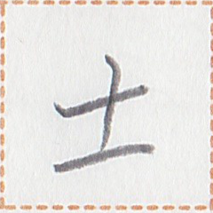
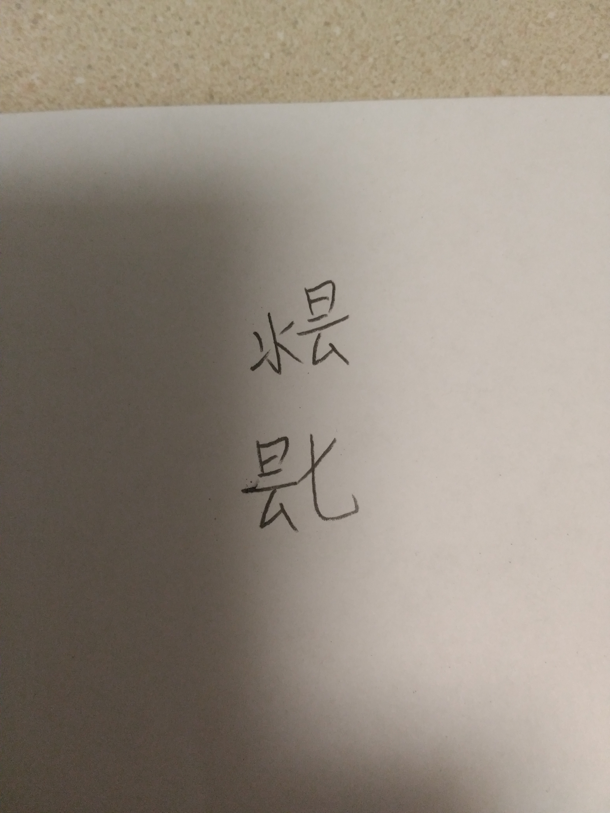
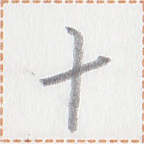

以下はjekto.vatimelijuによる考察ログである。この記事は「パイグ語・古パイグ・燐字などについて考察する」という記事から分離独立したものなので、番号が飛び飛びになっている。
「パイグ語・古パイグ・燐字などについて考察する」にも載っている、2017/11/09 23:00あたり以前の話を参考までに載せておく。
2017-10-15 16:12:09: 悠里広報の115字を収集 2017-10-15 16:36:45: 「神」やパイグ将棋系が欠けていることに気づく。 この辺りから、「頻用字を選出する」というよりは、「とりあえず現世で作った燐字を全部集めなくては」という方面にモチベが移動する。 2017-10-15 17:04:47: パイグ語文献をひたすら漁って字を集め始める。「類為貝刀声」「家善友美」「受与力須」「而即」（2021年1月25日追記：以上の4つはリンク切れ） 「御再乎於遠悪現(→真)噫」「雪夏冬」を発掘して17:25:11。 2017-10-15 18:05:41: 止広激付端律集を発掘し、「せっかくならパイグ音との対応表を作れば便利では？」と思いはじめる 2017-10-15 18:18:24: パイグ語漢字転写早見表が作成される 2017-10-19 01:33:21: 既にあったパイグ語OTM-JSON（21語のみ）をスクリプトによる自動登録で142語に増やす 2017-10-21 09:21:37: パイグ語から燐字を入力できるようにする 2017-10-21 16:41:40: 後に「パイグ語整理計画」と呼ばれることになる、諸文献の照らし合わせによるパイグ音確定作業が開始される。 なお、この作業には上記の入力システムが活躍した。この過程で旧綴り（「力」piuなど）も一掃される。 2017-10-23 18:23:12: パイグ語OTM-JSONがZpDIC-Onlineで公開される。 2017-10-24 19:36:56: パイグ語整理計画が一段落する。 2017-10-24 20:37:28: と思いきやPDIC辞書があったので、そのcsvをもらう 2017-10-25 06:09:xx: csvをGoogle Spreadsheetに変換する 2017-10-25 06:18:09: パイグ語漢字転写早見表と照らし合わせたところ、様々な案件が発生する。 2017-10-26 22:24:21: PDIC版との照らし合わせで74字追加される。 2017-10-27 10:26:15: PDIC版に基づき、ZpDIC版に語義が大量に追加される。という感じで、パイグ語辞書が充実してきた。
燐字を書いた原稿用紙が公開された（その1、 その2）ので、これをなるべく扱いやすい形にしていきたい。
原稿用紙と早見表の順序が異なっていたので、早見表を原稿用紙の順序に合わせた。 こととか）があったものの、無事原稿用紙と漢字転写の対応表ができた。
「果」が異なる字形で2回書かれているので、を一般的な字、 を異体字とした。
を異体字とした。 の方が異体字であるのは、
の方が異体字であるのは、 「終」と紛らわしいからであるらしい。
「終」と紛らわしいからであるらしい。
線形代数の御加護もあって、無事画像を分割する処理を実装できた（そちらの開発ログはこちらを参照のこと）。さて、後は実際に分割するだけである。
異体字とはいえ、漢字が振られていないのはプログラム上不便である。（「果1」「果2」とかやるのは色々めんどい）ということで、は「果」、 は「菓」とすることにした。
は「菓」とすることにした。
一覧。
「燐字電子化計画」に基づく字と、2017年3月の悠里広報に載っている字との間に差異のあるものが5文字（「金」「外」「衣」「機」「箱」）あった。また、燐字海の「光」の記事を見ると、 「光」の上に
「光」の上に 「日」の載った字形が異体字として収録されている。さらに、kpht氏による燐字16x16フォント作成（近日中に公開予定）の最中に、
「日」の載った字形が異体字として収録されている。さらに、kpht氏による燐字16x16フォント作成（近日中に公開予定）の最中に、 「積」の興味深い誤分析や「石」の変種が発生した。
「積」の興味深い誤分析や「石」の変種が発生した。
ということで、これらを異体字とし、（9-4.で言及したように）漢字転写が欲しいのでそれぞれ
金: 欽 外: 夘 衣: 布 機: 械 箱: 函 光: 輝 石: 岩
とした。
以上をまとめた「燐字の異体字(2017年11月下旬)」というGoogleスライドを作成した。
燐字を構成要素に分解し、漢字構成記述文字列で記述してみた。以下が例である。
何 ⿵心無 全 ⿴口物 肉 ⿱閉骨 金 ⿻再石 脂 ⿰火膠 島 ⿳閉五水 友 ⿲人糸人 ⿴等糸 美 ⿱⿴口一上 季 ⿺星輪
一覧はこちら。
@S_Y15 「御」、「大きくて重いので『御』」と通話で言っていた気がするが、原稿用紙の字形って「錘」ではなく「力」のような
— .sozysozbot.@hsjoihs@jekto.vatimeliju (@sosoBOTpi) 2017年11月20日
ああ、大きい力か。なるほど
— S.Y@タカン系パイグ系日本人 (@S_Y15) 2017年11月21日
異体字として「⿰大錘」立ててみるか？
— .sozysozbot.@hsjoihs@jekto.vatimeliju (@sosoBOTpi) 2017年11月21日
まあ、字形的にも混同しそうよね
— S.Y@タカン系パイグ系日本人 (@S_Y15) 2017年11月21日
漢字転写は「禦」でいいか、第一水準だし
— .sozysozbot.@hsjoihs@jekto.vatimeliju (@sosoBOTpi) 2017年11月21日
あー、ええやん。
— S.Y@タカン系パイグ系日本人 (@S_Y15) 2017年11月21日
ということで、「御」の異体字「禦：⿰大錘」を立てることにした。「燐字の異体字(2017年11月下旬)」にも追記。
「燐字海」に載っている字音データを単独ファイルにまとめた。
で、字音だけを集めた「燐声集」なるものを作りたいと思った。
| 現世名 | 燐声集 |
| ラネーメ名 | 清声集 |
| パイグ名 | lin cuop² dat² |
ということで、とりあえず作ったCSVをOTM-JSONに変換した。
燐 字 フ ォ ン ト 完 成
— 🚩かぱはた🚩 (@yuugokku_2) 2017年11月24日
「燐字電子化計画」および「悠里世界OSプロジェクト」の一部である、16x16燐字フォント作成byかぱはた が完了した。
正確にいうと、第一回書き取りの分しか(当然ながら)終わっていないので、今後増えるが。

さて、次にすべきは、とりあえずこれをバラバラの画像にすることだろう。
ファイル保存したいので、Pythonを使うことにしよう
書けた。さて例文。
枠線なしのバージョンももらった。
さて、文字コード決めなきゃなぁ
「パイグ語・古パイグ・燐字などについて考察する」という記事から燐字に関係する部分を独立させてこの記事とした。以降、独立元とは別々に、章番号は連番に振っていく。
とりあえず、パイグ語漢字転写早見表に載っている情報をなるべく多く「清声集」にも載せていきたい。
まず、「内容」だとちょっと見づらいので、「訳語」欄に掲載してみる。あと凡例も。
「パイグ語漢字転写早見表」を編集して「【改造版】燐字早見表（牌AZZ藍）」というのを作れたので、「清声集」に変換していこう。
変換したものを前のとくっつけ、同一単語を合流させた。
これだと同一情報の重複が出るはずだが、手動で削除するのはミスの原因なのでスクリプトで処理したいところである。
とりあえず、手元にバート語あるし載せてみるか。
菓 「果」の異体字 械 「機」の異体字 岩 「石」の異体字 輝 「光」の異体字 禦 「御」の異体字 欽 「金」の異体字 函 「箱」の異体字 布 「衣」の異体字 累 「積」の異体字 夘 「外」の異体字
を収録した。
「禦」のcompositionが載っていなかったので載せた。また、「疲」の構成を知ったので載せた。
アイルlaitai「丸一日」が「いせにほ」小ネタで登場した。話したところ、アイル語ではAKIAがsunとday、laitaiがdayのみを指す、ということになり、漢字転写は「旦」にした。
ちなみに、「旦」という漢字の現世での用法としては、
{旦} は確かに「朝」という意味をもちますが，より厳密（というより狭義？）に言えば動詞【（夜が）明ける】またその名詞形【（夜）明け】ということです。
— Mag462@みぉ⁵⁵く³³ぼ²¹ま⁵⁵ゆ²¹ (@Magnezone462) 2018年1月2日
引伸義としては名詞【（一日の時間帯としての）朝】，名詞【month の明け始めの日】，形容詞【明るい】などがあります。
というのがあって、この他にも、「漢辞海」を見ると「一日。不特定のある日。『一旦』」というのがあったりするので、「丸一日」の意味のlaitaiを表す燐字の漢字転写に「旦」を使うのは何ら問題がなかったりする。まあ、そもそも「金属」の意味を表す燐字「金」の異体字の漢字転写を「欽」にしている時点で、現世の用法を過度に気にする必要は全くないのだが。
アイルpouje、バートbhán、祖語phaenに「通」を造字。
アイルNISIU、アイツォtiu2に「強」を造字。
重複除去のスクリプトを書いた。
自明な競合は修正したが…「筆」のアイル語にk'uaaとkakusaが共存してしまっているなぁ。
今のところ、ラネーメ諸言語のこそあどはこのような感じだそうだ。
| 意味 | パイグ | アイル | タカン | バート | 祖語 |
| これ | ka1 | ka | ko | kaa | |
| これ | buka, maikau | me | mqi | ||
| この | ka1 | lebi | kom(= ko + -om) | ||
| それ | ze1 | chesi(それ) | |||
| それ | tisi(それ) | ti | dí | ||
| あれ | zap2 | chaba(彼) | |||
| あれ | kisi(あれ) | ki | kí(彼、あれ) | ||
| どれ(何) | nan2 | nanu(何) | nána | naanu | |
| どれ(何) | susi(どれ) | cu |
これらに「何個燐字を振るか」「どの漢字を当てるか」を考えねば。
「chesiとtisiは共に「其」でよさそう by ふぁふす, S.Y, j.v」となった。「案：chesiとtisiは同根であり、*tiqという形」というのも良さそうという感じになった。
@s_y15 「疲：⿵心無」と前に言われたが、「何：⿵心無」なのでアウトです
— .sozysozbot.@hsjoihs@jekto.vatimeliju (@sosoBOTpi) 2018年1月11日
「疲」の構成を「疲：⿵心無」と習っていたが、なんと「何：⿵心無」だったりするのである。
「第二回燐字書き取り」をやってみた pic.twitter.com/Q1JJZhAc4t
— .sozysozbot.@hsjoihs@jekto.vatimeliju (@sosoBOTpi) 2018年1月11日
前回の書き取りはSYがやったが、今回はjekto.vatimelijuが第二回燐字書き取りを行った。
分割もできた（作業の様子はこちら）ので例文。
過去のと比較しても
（j.vの字のバランスが突出して悪いことを除けば）問題ない。
----- 1月 22日 ----- Fafs falira [01:07] 燐字海にちゃんと字を登録して欲しい感 jekto vatimeliju [01:09] それは思う（何がボトルネックになってるんだろうね、やはり燐字画像か） Fafs falira [01:10] 字を登録するたびに各言語の対応語を書いてるけど、声集と労力が被ってる気がする。 jekto vatimeliju [01:11] 声集から対応語部分の記載は自動変換でできそうだなぁ、やってみるか（こちらは今日日曜日だし） Fafs falira [01:12] 良さそう [01:12] あと、燐字画像は書き取りの奴を一応張っておけばいい気がする。 jekto vatimeliju [01:13] やってみるかー（Google PagesのAPI叩くのは流石にしんどいから、HTMLを生成してコピペ、かなぁ） Fafs falira [01:13] よろしくおねがいさしすせそ(そろそろ理語の燐字記法を考えたい) jekto vatimeliju [01:13] 300個超のコピペが待っている
ということで、自動生成のスクリプトを実装した。あとはこれをコピペするだけである。
以下の170字を登録した。なお、記事の作成が字の創作に先立つのもおかしいので、「万」以外は既に造字している文字で記事を立てているほか、どの言語でも対応する訳語が確定していない一部の字（肉背脂腹虫谷陸頭）については記事の設置を見送った。
万上下与中之乎互亦心 位低何使倉値党入兵内 再冠処出刀別力加勿北 南友受口古右同名味唯 善噫囲国地墨壊声外大 天女如始季学守官家寝 将小層山島川左巫己弓 彼律御悪意我或戦撃故 文新於族日星春時書月 木机来東果横機此汝油 海清満為牌物猫獣王琴 男目真石硬種積笑等箱 米糸紙終縦美而膠船色 花草虎蜜術衣西覆認論 識豊貝車軸輩輪連金銭 錘閉開集静類風馬骨高 魚鳥黒龍其全絵周近席
12月26日ぐらいに「十」が＊乙の字形になることを決めてた。しかし書き忘れていたので今書いておく。
リパラオネ教を表す燐字として「哩」 が作られた。「二」
が作られた。「二」 + 「闇」
+ 「闇」 + 「閉」
+ 「閉」 + 「論」
+ 「論」 からなる字であるが、これを 「二」
からなる字であるが、これを 「二」 + 「水」 + 「光」
+ 「水」 + 「光」 + 「論」
+ 「論」 と異分析すれば、「水（よどみ無く）光（はっきりと）二（もう一度）論（言う）」という意味になるのではなかろうか？という話になった。
と異分析すれば、「水（よどみ無く）光（はっきりと）二（もう一度）論（言う）」という意味になるのではなかろうか？という話になった。
上記の話から発展して、「字を無理矢理作って意味をこじつけるゲームがラネーメ圏にあるのでは？」という話になった。結果、
となった。
字積を考察する上でも、どんな字素が頻出するのかをまとめたほうが良さそうだという話になった。「燐字海」に画数や字源を登録する上でも、一旦まとめるのがよかろうということである。
字の構成素「＊丿」ってどんな燐字になるのだろうか？とS.Yと考えたところ、「少」に当てるのがよいのではないかとなった。
「守 ⿰⿴口一人」 の左側って何に由来するんだろう？」とj.vがS.Yに聞いたところ、板の意味であると言われた。ということで、「平」の燐字（アイルowuは「板」の意）が⿴口一であることとなった。
の左側って何に由来するんだろう？」とj.vがS.Yに聞いたところ、板の意味であると言われた。ということで、「平」の燐字（アイルowuは「板」の意）が⿴口一であることとなった。
「美」 の上の部分も板なのか、と言ったところ、実は字源的には「目」
の上の部分も板なのか、と言ったところ、実は字源的には「目」 である、とのことだった。なら上の部分が「目」である異体字もあるのでは？ということで、「麗」に当てることとした。
である、とのことだった。なら上の部分が「目」である異体字もあるのでは？ということで、「麗」に当てることとした。
哩 ⿲二闇⿱閉論 十 ＊乙 少 ＊丿 平 ⿴口一 麗 ⿱目上
「悪」の下の部分って「下」 だそうな。撥ねているのはただのデザインとのこと。
だそうな。撥ねているのはただのデザインとのこと。
＊冂が「門」になった。やったね。「今は見つけられないけど、過去に造字した資料があるはず」とのことなので、それが発掘されたら即異体字として登録である。
＊凵が「包」になった。また、「煙」は⿶包火となった。
「綿」は⿱糸糸になった。「軟 ⿰綿如」と合わせると2字確定。
「来」 の略体として
の略体として の半分が使われそうという話になった(S.Yと話した)ので、「耒」として登録することにした。「来」の異体字という扱いでよさそうだが、「タカンocaバートoṣaにも使わたりする」という説が立ち、採用された。
の半分が使われそうという話になった(S.Yと話した)ので、「耒」として登録することにした。「来」の異体字という扱いでよさそうだが、「タカンocaバートoṣaにも使わたりする」という説が立ち、採用された。
SY「⿱＊冖五は『圧』がよさそう気がする」ということで確定。
「新」は【⿳下日耒】であって【⿱下時】ではないので修正。あとバート読みがrúṣになったので登録。
「猫」 は「閉」
は「閉」 +「虎」だが、SYと話して「意味論上も筋が通るし、出っ張りもあってないようなものだし、最初期の頃から『閉』
+「虎」だが、SYと話して「意味論上も筋が通るし、出っ張りもあってないようなものだし、最初期の頃から『閉』 +『獣』
+『獣』 もあるでしょ」となったので異体字として採用。漢字転写としては、「貓」が意味論上完璧なので採用したい。第四水準だけどまあええやろ。
もあるでしょ」となったので異体字として採用。漢字転写としては、「貓」が意味論上完璧なので採用したい。第四水準だけどまあええやろ。
28-4.で書いたとおり、字素の分析を行ったので結果を掲載する。
データまとめ：こちら
現時点で字形の確定している燐字をまとめ、それぞれの燐字がどの字素から構成されているかを集計した。字素の登場回数（重複度を含める。つまり、一つの字に複数登場する場合は毎回それぞれを数える）を「貢献度」と呼び、字素ごとに集計して頻度を調べた。
http://journals.sagepub.com/doi/pdf/10.1177/016555159402000208 や http://aapt.scitation.org/doi/pdf/10.1119/1.16476 に出てくるモデルである P(n) = \frac{A \exp(-an)}{n^b} が上手く当てはまった。今回は確率ではなく登場回数を数えているが、当然Aの定数倍の差でしかない。
パラメータはA=24.3283, a=0.0299491, b=0.247932であり、R2=0.9885である。

生データ↓
字素分析の副産物として、画数表ができたので公開する。
膨大に造語してあるアイル語辞書の中から、確実に真理設定であると言える語を選ぶ作業を2017年12月31日から行っている。
今までパイグ語・タカン語・バート語・既存のアイル語文書などをソースとして（少しのリパライン語辞書からもとった）306語の真理性が確認されていた。「いせにほ」からの回収で314語となった。
さて、リパライン語辞書にはスキ語（=アイル語）34語とアイル語210語に由来する語が載っているので、それの回収をしていきたい。
と、その前に「いせにほ」を登録しておこう
SUKで登録されている9単語を登録。その中で、IAMIをIAKIと誤認してできたjarke、TUMUTIをTUMITIと誤認してできたxymizirが確認されたので、iakiとtumitiという語を真理設定アイル語に新造することとした。
SKIで登録されている26単語を登録。前に検索掛けたときは25個だったらしいけどなんか増えてる。まあいいや。（→原因判明。最新版でSUAMAがSKIからAIRに移ってた）
特にこれと言った案件は無かったので良し。
理語辞書のeまで完了
理語辞書のlまで完了
理語辞書の転写完了
S.Y「『上』 +『男』、『上』
+『男』、『上』 +『女』。」
+『女』。」
ということで確定。
バート・タカンでの可能表現に使う燐字「能」を追加。アイルacauに対応。
パイグtai・バートdeja・アイルt'aitaiuであるところの「咍」を追加。
第三回燐字書き取り pic.twitter.com/T248Sxdm1n
— .sozysozbot.@hsjoihs@jekto.vatimeliju (@sosoBOTpi) 2018年2月25日
jekto.vatimelijuが第三回燐字書き取りを行った。「十平門包綿軟耒圧貓父母」の11字を書いた。
分割もできた（作業の様子はこちら）ので11字書いてみよう。
ミスった。「軟」は「糸」 +「如」
+「如」 じゃなくて「綿」
じゃなくて「綿」 +「如」
+「如」 だった。さてどうしよう。
だった。さてどうしよう。
とりあえず燐字海に「第十八旬」として登録してきた。
「ミスったら異体字よね」「わかる」ということで、「糸」 +「如」
+「如」 は「柔」となった。
は「柔」となった。
バート語rijúḷ, bákúḷ, ṣúsa, ho, lomを清声集に追加。
人工言語ミュ語の作者であるnymwaさんのツイキャスを見ていて、
（phpなどを使って比較的便利に言語のデータを扱えているミュ語wikiと違って）燐字海、あれ全部手動でやっているので、めうがめうい（もうちょいマシな対抗勢力を作りたい）
とコメントしたところ、ガチプロnymwaさんから
「まあなんか、99さんはなんか、99さん？99氏？なんて言えばよく分からないけどなんか、はすじょいさん(jekto.vatimelijuのこと)がなんか作ればよいのでは、ないでしょうか。はい。という。
いやーなんか、はすじょいさんとかが作るとなんか、私のこういうのの、なんか百倍くらい素晴らしいインターフェースができあがる…できるのではないかと思っているので参考にしたいのではないでしょうか、はい。」
などという、競技プログラミング界隈の用語でいういわゆるハラスメントを受けるなどした。（動画の11:00~辺りから）
上記の2番目のリンクにある通り、
強いerはよくハラスメントをします。しかしこれは，ただ相手にダメージを与えて楽しんでいるわけではありません。ハラスメントをされた人が「なにくそ」と思って這い上がって来るのを待っているのです。つまりハラスメントは一種の優しさです。
ハラスメントをされたら，「自分は期待されているんだ」と思ってがんばりましょう。その努力はきっと報われます。
競プロ用語 - 幸せにより引用
ということが知られているので、軽く新辞書について考えてみるのもアリかもしれない。
さて、問題としては、私にはサーバーサイドが分からないというのがある。これについては「サーバーサイドを勉強する」という自明な選択肢があるが、もう一つ「辞書の全ページをローカルでコンパイルして、それをGithub Pagesでpushする」という方法もある。後者のほうがgitで扱いやすいし、もうそれでいいんじゃないかな。
あとは、「字典」ではなく「辞典」でありたい。というのも、全部の語や辞に燐字が振ってあるパイグ語と違って、それ以外の言語においては対応する字を考えていない語がそれなりに多いからである。
考えているのは、主に「真理設定アイル語辞書」「パイグ語辞書」「清声集」「バート語辞書」の4つのデータを統合し、単一のデータベースとして検索できるようにするというタイプのものである。
他に必要なデータとしては、compositionにある画数や燐字の構成に関する情報、古牌データに載っている韻図音やパイグ語古音のデータ、アイツォ音、2017年12月23日以来から私の手元では一切更新していないラネーメ祖語辞書などがある。リパライン語にある関連語とかについては、TWOCにリンクを飛ばせばいいだろう。
私の手元でだけコンパイルできてもしょうがないので、上で言及した諸資料については、コンパイルする度にgithubから落として解釈、それを大量のHTML群にしてpushする、という方針にしようかな。どこかで変化があったらコミット時の差分に現れてくれるはずだし。
んー、それとも、コンパイルして作るのはJavaScriptファイルで、それを辞書.htmlが解釈していく方針の方がいいかもなぁ。
アイル「筆」にはk'uaaとkakusaの2系統があって、牌kua2とかは前者の系統であることがわかったので清声集で2つに分離しておく。
「冠光」でタカン語cac-u「恒す」を見つけたので登録。
タカン語「人」が「すか」に変更になった。
kiak1とhikiは別単語では、となって分離。
さらに、韻図に訂正が入ったのでそれも適用。
バート語造語5.8で出てきて、2018年2月7日辺りにS.Yと話した、pwugo「獣性,愚かさ」〜bwogo「駄獣,荷物運搬用家畜」を「獣」に振ることにした。バートはbháṇúḷであり、タカンはmug-uである。
祖語形*kyoo、特に異論もないし採用でいいでしょ
「風」の祖語形はpqraが立っているが、藍牌での挙動がfurooと似ている割に'tqramと似ていないし、バートbháはpqでもpuでもありうるので、qを立てる根拠がなくuを立てたほうが良いとj.vが提案し、S.Yも同意した。ということで改定する。
燐字海と清声集を改定。
バート語やってたときにkpht氏から提案され、考えることになった。アイル語辞書を引いたところ、「paxo いぬ 犬」「phaxo {Ｂ}【動】イヌ（犬）」という偶然の一致を見つけ、面白いので採用となった。パイグはpa2とするっぽい。じゃあ古牌拼はpraで風噫素。
とりあえず清声集と真理設定アイル語辞書に収録。
比較言語学みたいなことをやった。つかれた。
バートtakuは牌tak1「布」・藍taku「服」と同根の借用語だが、意味用法は「流れ・繋がり」である。
「パイグだとniek1で言いそう」「あーなるほど」「『衣』 の右に『連』
の右に『連』 をつなげた字で書きそう」「はい採用、はい採用」「漢字転写は耳偏の『聯』でいいでしょ」「天才的では」となり、過去に類を見ない速度で造字された。
をつなげた字で書きそう」「はい採用、はい採用」「漢字転写は耳偏の『聯』でいいでしょ」「天才的では」となり、過去に類を見ない速度で造字された。
とりあえずパイグ早見表・composition.txt・composition・清声集に収録。
タカン語の単語をそれなりに清声集に収録した。その過程で、祖語辞書にのみ載っていた、藍kisu「頬」；皇kicu「頬」や藍shousa「穏やかだ」cosa-lu「穏やかである」などを登録したかったので、SYに漢字転写を決めてもらった。まあj.vの予想したとおりであった。
言うだけならタダ定期です（立案して2週間放置、いつもの） pic.twitter.com/HBlVDYxkoI
— .sozysozbot.@hsjoihs@jekto.vatimeliju (@sosoBOTpi) 2018年3月16日
わかるなあ……（js書けない(サーバーわからない（php少し書けます
— nymwa (@nymwa) 2018年3月16日
今折衷案を思いつきました（語ごとのファイルは生成する、ただし検索とかはクライアント側でjsにやらせる）
— .sozysozbot.@hsjoihs@jekto.vatimeliju (@sosoBOTpi) 2018年3月16日
っょぃ（こっちは全部の項をそれぞれtxtで保存してて，検索は全ファイル探索させてるだけだなんて言えない
— nymwa (@nymwa) 2018年3月16日
検索はphpで書いてるんですか…と聞こうと思ったけど「<form action="index.php" method="post">」って書いてあった、なるほど（httpとか何も分かってないタイプの人）（getとpostというものがあるらしい、で理解が止まっている）
— .sozysozbot.@hsjoihs@jekto.vatimeliju (@sosoBOTpi) 2018年3月16日
増えた。パイグで増えて、韻図音も作った。
「綿」、私も最初は「⿱糸糸」と決めていたのだが、気がついたら「⿰糸糸」 で書いていた。仕方がないので「綿」は「⿰糸糸」で、「棉」が「⿱糸糸」ということになった。composition直さなきゃ。
で書いていた。仕方がないので「綿」は「⿰糸糸」で、「棉」が「⿱糸糸」ということになった。composition直さなきゃ。
「琴」は「⿰糸声」（ +
+  ）なのだが、「⿰声机」（
）なのだが、「⿰声机」（ + ）が生えてきたので「箏」という転写をあてることに。
+ ）が生えてきたので「箏」という転写をあてることに。
さらに、「軟」は「⿰綿如」ではなく「⿰棉如」となった。3つ並べるのは苦しいので当然である。また、「柔」（⿰糸如）をcompositionに載せていなかったので載せた。
Amua-ma bwaulu situu-ma guko-pam-esa, dipai-m fentexoler-ne xiyu. あなた-他格 誤る 方策-他格 こうむる-将然-仮定, 私-他格 フェンテショレー-LOC 判定する あなたが間違った選択をするならば、私は(あなたを)フェンテショレーであるとみなす。 Gecwou-nu, anau-mo titati-ta bwaupau amua-ga laupwau-m botwu. 終わり-LOC, 全て-自格 死ぬ-PRF 〜だから あなた-GEN 選択-他格 無意味だ どうせ、みんな死ぬんだから（何を）選んでも無意味よ。


ということで、アイルxiyuは「A-他格 B-他格 C-処格 xiyu」で「AはBをCとみなす/判定する」の語義ということになった。「A-他格 B-他格 xiyu」なら「AはBを裁く」とかになりそうだ。パイグは「裁」の概念が「物事を分別する」、語義が「裁く, 分別する」であり、「xy1 pia2」は「部屋を片付ける」であるし、これまた「A裁B」が「AはBを裁く/分別する」、「A裁B於C」が「AはBをCとみなす」とでもなるのだろうか。
botwu「無意味な,くだらない」、gecwou「終わり」、titati「死ぬ」の3単語が新たに登録された。
バート語の仮定表現をどうするかj.vは迷っていたのだが、そういえばアイル語には-esaというのがあるのを忘れていた。考察の材料にしよう。
いい加減調べないとと思ったので調べてみたよ。

a, e, i, o, u, ai, au, ou, eiの9種。これ以外の母音連続はヒアートゥスとみなすと、以降の考察に全て辻褄が合う。（ひとまとまりと見るのがai, au, ou, eiのみである根拠：6万のほうで検索をかけた時、こいつらだけ(例えば)aCiよりaiの方が5倍以上頻度が高い）
子音はkmnstのみ。iVCVはjVCVとして発音されてるっぽい。
とまあ、なんともまあ偏りまくった分布となっている。なぜ第三母音の前の子音はCuaCV以外は欠けるのか。
SY曰く、「AはBをCとみなす」は「A裁B於C」ではなく「A裁B同C」が適切らしい。
アイルsusi、タカンcu
リパラインソースだったnyautuがバートnautuとして採用。

ということで清声集に追加。
なおパイグの表の方では2018/4/4で既に追加済み。
そういえば、dexuも元々リパラインソースだった
アイルmaikau,bukaやタカンme用の「茲」を追加。
*kuranの-nは子孫言語に一切痕跡がないが、リパラインkranteなどとの兼ね合いでnが立っていた。しかし、「kranteの-nteは動詞不定形の*-ænd-Eの名残かなあ」「理祖語、語根*kəlが生えた。書く、描く、筆、ペンらへんと取り敢えず書いたが、まだ全体を見てないので仮」となり、-nを立てる根拠が一切無くなったので*kuraへと改定する。
ということで、パイグ語辞書・燐字海・清声集を修正した。
第4回燐字書き取りが行われた。なお、「父」「母」はミスっているので今回は収録しないものとする。
互 文 須 即 遠 雪 夏 冬 止 激 付 端 春 秋 子 混 民 迷 常 祭 形 毎 極 労 助 定 赤 軟 豊 貧 倒 長 傾 圧 鼓 包 散 深 門 傷 棚 寝 綿 普 少 反 黒 磨 血 帯 謝 豆 ？ 琴 白 煙 寒 耳 抗 ？ 軽 酒 十 道 奮 急 素 祖 前 体 従 茶 正 樽 遊 甘 型 歌 謎 裁 怖 質 片 件 震 青 嗅 後 歪 近 広 万 挽 平 百 欽 夘 布 械 函 輝 累 岩 禦 哩 麗 疲 塩 耒 貓 能 咍 柔 恒 犬 胸 聯 頬 穏 短 直 棉 箏 孰 毛 那 茲

「雪 ⿵天花」「夏 ⿱火日」「定 ⿰手一」「傷 ⿱少四」「棚 ⿱五大」「反 ＊レ」「血 ⿰心水」「耳 ⿻少＊ヨ」「道 ⿰足処」

次回はこんな感じになる。
藍nyautu、伐nautuです
恒例のごとく分解。（作業の様子はこちら）
「少」「道」「煙」を燐字海に追加。
アイルdoche、バートḍázの燐字「店」を追加し、パイグではsu1 hueと言うんだろうなぁと、字形はsu1 hueなんだろうなぁと。composition.txtとかcompositionとか清声集とかに収録した。
アイルcee、バートzeúḷ。
アイルkanata伐kánatúḷ、アイルkanaka伐kánaghúḷ、牌kan1が増えた。
アイルcouyau、バートṣoyaから古牌sroh、パイグco1が発生。古牌で区別されていたやつがパイグで合流する楽しさ。
バートkhakやパイグkuak1が咳の擬音として使えそうなことから、「㕮 ⿰声父」を登録。
形声文字が立った。声+之（噫の異体字）が崩れたもの。「吁 ⿱五水」となる。登録。
↓
藍baihaiu、伐bháheúḷ。既存のパイグ単語で表すのが厳しいと判断され、パイグにも追加されることに。なお字形・字音は未定。
漢字転写を入れると燐字を吐いてくれる仕組みが欲しくなった。作ろう。
とりあえず、画像の存在の有無をオブジェクトで取れるようにし、ついでに表形式で見せるようにした。
燐字画像を出してくれて、未造字ならそうと記載し、誰が書いた字を優先するかも選べるようにした。
追加。詳しくはパイグの方に書いた。
更新マニュアルを軽く書いた。
「店」と同様、パイグ人はkin2 niek1と読むという字がありそう、という話になった。しかし字形は「鎖 ⿹連輪」である。
パイグ語リポジトリに説明を書いた。
欲しくなった＆要るので作成。リウスニータのレシピがこれで書けるようになるかも。
卵の話になり、「球体を言う方法がない」と言われたので作成。uetと近そうななにかということも兼ねてアイルcwelo「玉」になった。
パイグの方見て。
あった方が良かろうとなり、アイルpolaから牌po1となった。

書いてもらった。画像は2018年7月7日にやってきた。
さて、とりあえず、スキャナじゃないので台形補正とかしなきゃなのよな。
「甘 ⿱上味」。
「労 ⿰人力」。
「助 ＊开」（←「⿱五術」の略）。異体字「＊天」は転写「救」。
「『豆』と『種』って何が違うのか」という話になった。パイグでは「種」といえばどんぐりである。じゃあ「豆」は何が違うのか？
2秒ぐらいで「さやの有無とかどうよ」という話になった。枝豆とかさやえんどうなど、さやで連なっているやつが「豆」。なるほどなぁ。コーヒー豆は「種」か。まあどんぐりっぽいかもな。
字については、
のNの下のやつとなった。無理やり表すなら「豆 ⿳五⿻⿻再六再五」とでもなるか。
「樽 ＊ㅂ」。これにより「鼓 ⿸声樽」が確定。異体字の方には「皷 ⿰樽声」というのを振ることに。
「深 ⿱樽五 ＊브」
「貧 ⿸％少銭」。現世「制」の左側っぽくなる。
「席」の異体字であり、「座 ⿱無机」となった。
「従 ⿰将人」。異体字「从 ⿰王人」。
「嗅 ⿻筆一」
「奮 ⿱心火」「酒 ⿰奮水」
「傾 ＊厂」
「件 ⿱再物」
「直 ＊丰」。曰く、最初考えた字形が「棚」と衝突したので突き出させたそうな。
「混 ⿶包値」
「震 ⿲無＊中少」
「端 ⿻再六」
「正 ⿰直如」
「長 ⿰大直」
「短 ⿰小直」
以上も全て2018年8月8日に決まっていたが、私が登録を怠っていた。
2018年8月15日決定。
足したよ。
恒例のごとく分解。（作業の様子はこちら）
今回足せたのは「端混祭労助貧長傾鼓散深黒豆父抗母酒奮素祖前従茶正樽甘裁片件震嗅后歪広挽立疲座能短直㕮吁救皷从」の画像。
前回終了時点のこれ（再掲）が、
こうなって、
こう。
次回は

やらなきゃなぁ。
マニュアルが用意されていたおかげでlin-marn内部データベース（燐字→画像変換用のデータベース）も更新できた。
「哩」「麗」「店」「鎖」の4字については、lin-marnで画像が用意できていないことがわかったので、第7回に収録予定とした。
そういえば、なぜか『第6回にしろ』とどっかに書いてあったので第6回にしたが、第5回って存在したんかな。書いてもらったけど紙が曲がっていて取り込めていない、かぱはた燐字のことかな？多分そうっぽい？
第二十旬（件傾前助労㕮嗅奮広座）・第二十一旬（後従抗挽散樽正歪深片）・第二十二旬（甘直短祖立素能茶裁豆）・第二十三旬（貧酒長震救鼓）を登録。
@S_Y15 「後 ⿱背処」が書き取りでは「後 ⿱背足」になっているのだが、「⿱背処」と「⿱背足」のどちらを「后」に割り当てます？（cf. 「前 ⿱腹処」はちゃんとそうなっている）
— .sozysozbot.@hsjoihs@jekto.vatimeliju (@sosoBOTpi) 2019年1月1日
統一感から背処に後を宛てますか。ところで后、「皇帝の妻」の意味で使いたい際に困りそう。（とはいえ妃があるか）
— S.Y (@S_Y15) 2019年1月1日
あと、「貧 ⿸％少銭」が「貧 ⿸少銭」になっている（つまり、＊ノの画とその次の画がくっついておらず、画数が1増えている）が、果たしてこれはデザイン差なのか異体字なのか
— .sozysozbot.@hsjoihs@jekto.vatimeliju (@sosoBOTpi) 2019年1月1日
これはデザイン差で良いのでは
— S.Y (@S_Y15) 2019年1月1日
ということで修正作業をね。まず清声集に「后」を追加。そして画像のファイル名を変更。漢字転写早見表を更新。データベースを更新。
以下はjekto.vatimelijuの発言。
ということで第二十三旬に肉混煙疲祭、第二十四旬に端聯が追加された。
こういうの管理するの面倒すぎるしそろそろ統合辞書ほしい。
「全」のアイル同根語が行方不明だったが、zabeeというやつがあるらしいことが判明、真理設定に復活。
さて、zabeeのza-ってなんだろうね。
恒例のごとく分解。（作業の様子はこちら）
今回足せたのは「哩麗店鎖後」の画像。ただしj.vの書き取り。
データベースにも足した。
笛の穴を描写するのに必要だったので考えた。貫通している穴と凹みとって別概念な気がしたので2つ立てた。
現状、字形が定まっている字には全部画像を提供できている。
-Kのような形を楷書化すればよいのでは（「魚」との区別が明確になるような工夫は要る）ということでアイルrokuからパイグlok1「笛」追加。
アイルboungauからパイグbon2追加。
そろそろ「我汝此其彼何或全無」順にも飽きてきたので、とりあえず0~511のコードポイントをランダムで振った。まあこのペースだと512なんてそうそういかんやろ現実問題として。足りなくなったらそれはそれで嬉しい悲鳴なのでよし。
これでいいことにj.vが気づき、SYが合意したので採用。
「多 ⿱人人」「極 ⿱物物」「筒 ＊ㅒ」となった。
発端は、「⿱物物、アリでは」→「じゃあ⿱人人もできるな」→「『等』の動用か、なるほど」→「『多』『極』に割り振れそうだな」→「じゃあ『等』と概念が近そうな『多』を⿱人人にしよう」という話でSYとj.vでまとまった。
「増 ⿰足多」を新造。なお音は全く決まってない。
sy「ヴェフィスってパイグ語でなんていうんでしょうね」
— Fafs F. Sashimi@いせにほ好評発売中 (@sashimiwiki) 2018年11月11日
fafs「uep1か？」
sy「ああ、uep1、そういえば「哩字」(lip man1)でリパライン字って指しますからね」
fa「ん？リパライン字？」
sy「あっ（笑）、リパライン字ってなんだ」
fa「多分「哩字」って「燐帝字母」のことだぞ。」#悠里界隈名言録
この2単語収録できてないですね、収録します https://t.co/95X1Ui4nMx
— .sozysozbot.@hsjoihs@jekto.vatimeliju (@sosoBOTpi) 2019年2月12日
「淮」は現世で地名用字なのでそのまま漢字転写として使って問題なさそう。
「笛 ⿰声筒」「竹 ⿰木筒」を定め、動用字がありそうとなった。
「漢辞海」によると「竺」は篤、毒、竹の通用か地名用字だそうなので、採用。
笛 ⿰声筒 笙 ⿰筒声 淮 竹 ⿰木筒 竺 ⿰筒木
「哩」が清声集に載っていなかったので載せる。
「類」 が如何にも狭苦しいので、「⿰同多」になっている動用字があってもよいのではという話になった。転写「属」。
が如何にも狭苦しいので、「⿰同多」になっている動用字があってもよいのではという話になった。転写「属」。
恒例のごとく分解。（作業の様子はこちら）
今回足せたのは「倒即増多属極竹竺笙笛筒」の画像。ただしj.vの書き取り。
データベースにも足した。
造字されたらしい。「⿰直為」。
j.vが提案したら即造字された。「針 ＊亅」。木と組み合わせてトゲとかが生まれるかもしれないが一旦放置。
「編纂者、編集者、もしくは書記官の長とか、主張の根幹とか」の義。リパライン語姓skarsnaの燐化名。⿰軸筆。
「⿰声声」でよいのではとなった。
「⿰闇行」が通話で生えたので採用。
「始」と「終」を融合させて「恒 ⿳日五日」になった。
「立 ⿱人五」をcompositionに収録し忘れていたことを、「使清術集」見ていて気づいたので収録。
「自然から資源を得る」の意の語。字形も定めた。
「受」の上半分である「筆」の下に、「果」を足した形である。ゆえに「⿱筆果」。
image_table/image_existence_table.jsonというファイル、私の知る限り誰も使用しておらず、単に情報が重複しているだけであるので削除する。
もろもろをTypeScriptにマイグレートした。
mysterious_encoding.jsをimage_table/下に移した。
失う。
「軍」(kaik dat2) (⿰兵⿱兵兵)：軍を表したり、パイグ将棋の片方の陣営を表したりする。
「隊」(nie) (⿱兵兵)：パイグ将棋の駒を製造する際に8つひとまとまりで作るが、その時のまとまりのこと。
「燐字において『品』のような構成はあまり用いられない。パイグ文字の官定が左一なのもこの先例と関係がある」となった。
SY「『青』、字形もうあるんだけど」
j.v「え、マジ？composition.txtにないなら私認知してないぞ」
SY「⿰色水です」
j.v「了解です」
不統一を統一せねば。とりあえず、「笛」は転写が定まっていたのに「早見表」でも未制定扱いになっていた。
今の所、「燐字の字形が定まっているかどうか」を記録している場所は5種類ある。
とりあえず2.「燐字書き取り」と1.「早見表」を手動で一致させる。
次。composition.txt。えー「composition.txtで空欄となっているタイプの未造字」は「須遠冬止激付秋子民迷常形毎赤普磨帯白寒軽急体遊型謎怖質万百」である。「composition.txtに掲載されていないというタイプの未造字」は、「早見表」とcomposition.txtとの差分を取って、「辿千旦通強塩咍犬胸頬穏孰毛那茲詞巻躍壁遅牛卵球網羊穴凹淮失」か。
そもそも未造字の処理がcomposition.txtにおいて無根拠に2通りに分かれているのがおかしいのよな。前にFafs氏にも言われたけど。
とりあえず、3. composition.txtと 1. = 2. の等価性が確認できた。
「composition.txtにおいて無根拠に2通りに分かれているのがおかしい」ので、統一することにした。
アイルimika、タカンimik-u
アイルmitiku。アイルsitikaがsik2なのでmik系統かと思いきや、mitとなった。
アイルtukumuku「陸橋、歩道橋」は（言語学的に畳語ではなさそうだけど）畳語みたいに意識され「橋橋」と書かれる。
ateai, ales, adheṣですね
えーと 1. = 2. = 3. までやった。それ以降このデータいじってないはずだから今でも 1. = 2. = 3. であるはず。
4.と3.との等価性を確認。
... とりあえずIMAGE_EXISTENCE_TABLEをNode.jsにでも作らせるようにするか？いやとりあえず先に等価性の検証。
テキトーにlet arr = []; outer: for(let k in IMAGE_EXISTENCE_TABLE) { for (let l in IMAGE_EXISTENCE_TABLE[k]) { if (IMAGE_EXISTENCE_TABLE[k][l]) { arr.push(k); continue outer;} } }
とか書き散らして、
これに["謝", "針", "翰", "歌", "寐", "恒", "享", "軍", "隊", "青"]をくっつけて、
はい検証した。
「パイグ語漢字転写早見表」の先頭に載っている統計情報、
とりあえず「制定済みであるかどうか」とかはそもそもパイグ語側の情報じゃないわけで、この表からそれらの情報にアクセスする権限を削ろうと思う。
そのためにはまずこっちで代替の統計表示ページを作らないと。
とりあえず「字形があるかどうか」だけは自動で表示してくれるページを作った。
これをベースに、1. である「パイグ語漢字転写早見表」で、セルの色とカラムとの両方で管理していた「字形があるかどうか」をこっちのリポジトリに移管。
そもそもこいつって毎回更新するんじゃなくて、画像が足されるたびに足されるべきものじゃね？これ毎回やるの明らかにめんどいことが知られているし。
ということで改良した。今後はNEW_IMAGE_EXISTENCE_TABLEを使ってほしい。
分数形態素のうち、「半分」は少なくともありそうなので足しておく。
2019年6月1日には提案されていたが、2019年8月9日になってやっと登録された。
「秋」は構成要素が2019年7月16日にS.Yにより提案され、「冬」は同日に
Fafs「シンプルに季節の末尾だから閉とか使うとかどうでしょう」
SY「ああ、良さそう」
Каруя「机戦で一位季が春で四位季が冬なことから一年が春から始まって冬に終わるのも自明ととれそう」
Fafs「あーなるほど（ラネーメの季節感に合ってるか確かに疑問だった）」
j.v「中緯度だと冬が農業の終わりなので。ローマも元はMartius始まりだったはず」
SY「閉と日にします」
となった。とはいえ位置の情報が来ていなかった。2019年8月9日についに「秋：⿰米刀」「冬：⿱閉日」と伝えられたため、登録。
今までは手で貢献度を調べソートしていたが、自動化したので今後は自動でソートされて表示される。ゆえにそれを使えばよくなった。
字が重複して表示されるバージョンも作った。
恒例のごとく分解。（作業の様子はこちら）
今回足せたのは「謝針翰歌寐恒享軍隊青止秋冬」の画像。ただしj.vの書き取り。
「加」に3つ目の読みが生えたよ。アイルnaho、バートnáhúl
「族」を動用して略した異体字「氏」⿱人圧と、それに「闇」を付けた「閥」⿰闇氏というバートニーマシュを表す燐字。
「真」が「⿱言石」でなく「⿳言石」と登録されているというミスがあったので訂正した。
SYが書いてくれたので恒例のごとく分解。（作業の様子はこちら）
登録数がとにかく多いので確認がちょっと大変だった。また、「纂 ⿰筆軸」と「穐 ⿰⿱五米刀」が生えた。足さなきゃ。（まだ足していない）
登録したのは「心冬足美集平筒竹下力横認神耳終硬属即大族貓火外口脂歪定銭鎖祭別机吁救海東谷時高肉亦三全正短入油笛字挽軸片笙己虎混戦於岩左件為開位青反嗅門止傷清从処国散彼論始甘震樽増深龍立官寐夏汝貝与虫耒豆倒女哩陸満山王㕮連箏月夘値春十六行軍味物鳥後菓恒氏之来南如天使名北皷意西腹素圧牌錘米島悪蜜綿煙柔歌将層裁父疲低猫奮前棉血目噫而人囲隊馬再七川輝書能石多広械互獣筆術茶近秋壊祖享文累静内鼓琴五包絵守麗類労声男或等在衣船善助手木倉撃識唯骨覆縦故閥花小函受雪直律竺輩貧四家極穐同色酒頭其膠星中禦少友季一乎針輪刀兵日抗車笑加党種草地古皇新二積纂右端何箱黒棚九金学風座寝冠背無周闇豊真御我紙欽母席聯水従此閉果機光八墨店上魚巫傾道言長糸布后軟謝弓」の310字。
足したぞ。
バート語の「両方」を表す割合名詞 ṣahe / ṣe と同根の可能性がある、アイルcah^iu「二つに分かれる」・sahu「双数」・sahua「二項式」を一応真理登録。
パイグ語でそれぞれ「he / hen 軽い納得」「ua 軽い驚き」。漢字転写は漢字音ベースで制定。
2019年6月1日には提案されていたが、字形が衝突しているとj.vが誤解していたため登録が遅れ8月22日になった。「通：⿱足処」
狭い幅の表を作ったので見やすくなった。
「啌」⿰声美、「哇」⿰声而。
リパラオネの音写「二闇閉」と宗教を表す「論」を合わせた字、「哩」 を崩してできる「⿲二花貓」
を崩してできる「⿲二花貓」 。
。
2019年8月28日20:04 の j.v『「粘土」ほしいな（理stucがアイルsitusu由来らしいぞ、いける）』 が通った。
恒例のごとく分解。（作業の様子はこちら）
今回足せたのは「即冬止秋極倒謝歌油後輝累通哩麗恒店鎖多笛筒増竹竺属針翰寐享軍戦氏閥纂穐啌哇」の画像。SYの書き取り。
「片」が一日の100分の1を表すときの分化字。
「勇ましい」。maqui(抵抗する)との関連性があるかもしれない。
藍 khaicwi（灰黄色）、kasui (硫黄) ,バート kúcujúl（黄色い）, kujacú（黄色）, kúcú（黄色）。*[kʷəj-sʷəj]みたいな祖形が想定されるので、せっかくなら漢語の双声語「流利」をもとに漢字転写は「硫俐」としよう。
2019/09/11に、
SY: ラネーメを表す字あったっけ j.v: これは本質なんですが、ない SY: 羅、当てとくか j.v: 清と似て非なる用法されそう。漢字文化圏でいう漢と唐みたいな感じか SY: 国構えに軸では？（会意とも取れる形声） j.v: 軸、アイルreaeよな SY: 完全象形なら「王座に居ます」なんだろうけど SY: lanermeだったりranermeだったりするので流音ならセーフ（ほんまか？） j.v: 軸は祖語 *ρ- か。じゃあ [r] がなかった時代のリパライン語での転写は l- だな（だな） SY: だな
となった。「羅」という漢字転写の前例は
13. アレス・リン
— Fafs F. Sashimi＠困難は分割せよ、したい (@sashimiwiki) 2017年12月12日
ラネーメ人アレス王朝二代目皇帝。燐帝字母を造ったり、その人格の良さばかりが喧伝されるが、そもそもこいつがヴァイフィスト制を制定しなければ後に続く面倒な南北分離は起きなかったので王朝崩壊の遠因ということにもなる。ただ、羅古論などを見るとやはり憎めない性格である。
「アイル語・タカン語・バート語が同時に学べる本」とか「羅古論から学ぶ燐帝字母」みたいなの、リパライン語で書けるとエモ。
— Fafs F. Sashimi＠困難は分割せよ、したい (@sashimiwiki) 2017年12月21日
などの「羅古論」。
「天神」。リパライン語辞書にla kemie-fon-makatiという形でしか載っていないのですっかり忘れていたが、当然真理設定にあるので登録。
字形と転写が定まっていながら形態素が定まっていなかったが、いせにほソースのmatutuがあるのでバートにbátatとして採用、清声集にも登録。
タカン語と理語のラノベ風タイトル pic.twitter.com/WOAYujKcoj
— 総合創作界隈『悠里』広報 (@jclaws_pr) December 5, 2016
これの「おる」が「夢」の義であり、同根語を探す必要がある。
アイルblouluではないか、となった。
上にある画像
にある
は「科満叛国聚」として転写されることとなった。ということで作業じゃ。
パイグ語sy2、アイル語asiuと同根なのは「～(対格)へ石を投げる」という動作動詞であって、「石」はアイルhewe（cf. リパライン語hervianni「石炭」）の方の形態素を取ることにした。
*fue-fueのような形の畳語かなーということで、eeか？語中にゼロ声母のeとか前例がないけど。 というかバート語かなりhiatusを嫌う（母音幹 + 不定詞語尾、母音幹 + -om(á)、間投詞ea、明らかな借用語(elameniác, juecleone, pedia, xízía)）のだがどうなるん。
というか実際に*fue-fueのような形が時間発展したらどうなるの。w-はai, o, áの前でしか確認されてないし、そもそも語中の *f の挙動についてなんもわからん。
[e̞ːje̞ː] となったりするのか？ほんまか？hiatus回避のために頻繁に挿入されるのは -gh- (cf. xághaika, ghitto (これは語頭i回避)) なので…ああ普通にeghiか。
eghiですねeghi。他に無いでしょ。「語末eはなんか変な経路でのみ供給されるので少ない」であったのだし。
と書いたのでこれを登録。
2019年11月21日：
同日SYと通話。SYの書いた「⿰人官」「⿱官翰」「⿱官人」をj.vが気にいり、2019年11月24日に転写を提案する。
SY「よさそう」、Fafs「全部採用されてて笑っている。嬉しき」により可決。ちなみにこっそり「⿰官人」を改め「⿰人官」としているので「全部採用」と果たして言えるのかというのはある。
⿰人善。現代語としては東latapanka「健康である、lit. 人-良い」で用いるので漢字転写は「健」を当てるものの、字形自体は燐帝時代からあり、「君子」などの意味に用いていた。現代語ではその用法は廃れているが、アイルjosu「大作、傑作」が詞としては対応する。あっjosua「決定的な、最終的な」も派生語でありそう。
「リパライン語と言語行政と文化」には燐字「兄」がある。ヴェフィス語で用いられるが、構成要素が多くグチャッとしている、ラネーメらしさの少ない字である。構成は「⿰⿱腹上輩」である。「腹」は「男」の略体だろうが、「女」と紛らわしそうでありおもしろい。
恒例のごとく分解。（作業の様子はこちら）
今回足せたのは「浬刻羅聚叛科吏宦僚健兄」の画像。j.vの書き取り。
2019年12月21日に「赤」の字形として「⿱火色」が確定。
のオンライン対戦のUIで必要になったし、重い腰を上げて「百」の字形を定めることとなった。
アイル語辞書でkitaを引くと字形として「＊土」という記載があるが、これは「大」（）と衝突。まあ意味的にも分化字っぽそう。つまり、もとは「おおきい」と「ひゃく」の両義を持っていた字だったのが、次第に「大きい」しか表さなくなって燐帝によりそれで統一された、ということ。
SY「形声の会意解釈でしょ」となり、類音を見るとアイルkitu「とても」がありこれには燐字「極」 がある。ということでこれを音符としてつけ、それが略され「物」になって「大」にくっついた分化字であるとなった。
がある。ということでこれを音符としてつけ、それが略され「物」になって「大」にくっついた分化字であるとなった。
「物」は上下配置されがちなので「⿱大物」または「⿱物大」。ダイスにより「⿱大物」が標準字形となる。「⿱物大」の転写は「佰」。
2020年1月17日に「⿻手無」が提案され採用された。
2020年1月21日のj.v『「＊冖」、字なのかどうか意見が割れていたが、「橋」に使えるのでは？となった』により登録。
橋ということはまあ横長の字形でありそうなので、「車」「冠」の上のは橋判定できるが「積」は橋判定できなそうとみなし、「積」を分解不能に認定。
16x16燐字フォント作成part2 by j.v & SY が完了した。
今回もkpht氏に頼みたかったのだが、最近あまり見かけないので、来るのを待ってもということでまずj.vが草案を作成。
それをSYの手により改良したものがこちら。
枠線を取り外すと
さて、次にすべきは、とりあえずこれをバラバラの画像にすることだろう。当時はPythonで処理したはずだが、当時のスクリプト残ってるかな。
…あー画像分離したのってまだリポジトリ分離してなかったときか。
split_dot.pyを使えば良さそう。
できた。
枠線なしがこちら。
「網」字形が確定。 
「震」の中で地震の意を表す分化字「⿱震処」。「顫」で転写。東島通商語zakan-zakanとかで使えそう。
さらにそれの異体字「⿲無書少」、転写は……「振」しかないかなぁ。
転写「帽」。
kait! xizi ie lu1 pet2 sau2 zau nan2? tai! mua2 mun1 zau cet2 kaik yn2? ge ge suo2 a zuo2 aim2! pic.twitter.com/pUT2PWxNNM
— 筆墨風 (@qafopwa) January 6, 2019
完了した。
非常に稀なイベントであるところの転写変更。
「出」という転写は運用上全然使われておらず、「生」が転写として用いられ続けてきたという実情があった。実情に合わせて「生」に変更することとなった。
さらに異体字「⿴包足」が発生、「産」を振る。
2019年6月15日ぐらいからほしいとされていたのに成っていなかった。
アイル語masuni「塗る」、macwe「（燃料を加えて）火を燃やし続ける」を元に液体油。
bacú「液体の植物油」、bácujúḷ「油を注ぐ・油を塗る」だな。
清王謝石からクレオス・ド・メアパトロネストの意味の「呉」が発掘されたので、登録。
音符である「軸」はアイツォでlea1などと書かれることから、不規則変化を経ずにaiになったものと判定。
後述する事情により「虫」にアイル音libwa、パイグ音li2が生えた。
2020年3月22日にj.vが

というのを提案した。
SY「米粉とスパイスからなる料理の義の語、どこかに残存してないかな」
j.v「バートがスパイス文化のはずなのよな、主食は種無しパンらしいけど。リパラオネ人は辛みを嫌うらしい」
fafs「リパラオネ人、甘い物好きということだけ知られている。」
さて、『米粉とスパイスからなる料理名』が形声字であるならば、当然右の字素は「須」と近い音でなければならない。
ということで対応するアイルの単語はlibwa「巻き貝」となったが、転写が「虫」であり字形が足が生えた昆虫のようななにかであるということは、もとの単語の語義は広くなくてはならない。
ということでパイグ語で「人・鳥・魚・獣でなくてやわらかくて非常に細長いというわけではないもの」ぐらいの語義であることとなった。日本語「むし」の意味範疇に貝類とかの海産物系を加え、丸っこくなかったり硬すぎたりしないものを排除したぐらいの語義。
恒例のごとく分解。（作業の様子はこちら）
今回足せたのは「赤百佰失橋網顫振帽瑪産須」の画像。j.vの書き取り。
naunilorúḷ、diliである。
字形は、鳥を横棒が貫いている形が提案されたが、「片仮名のモを貫通させたような感じにしたほうが運筆楽そう」という意見も出ている。
tetienと関係ありそうじゃない？
伐masátuのため
伐ghaccúḷ
伐jog
最近字の登録をサボっていたので、やっていく。
アイル共和国行政区画にも「NAUNILI 刺」を採用しているのでさっさと正式登録せねばならない。
と思ったら登録はされていた。グリフの存在をデータベースに教えねばならないというだけだな。
2020年5月15日に「⿳＊夫無無」の字形が提示された。異体の「⿱止無」も提示されたが、転写を定めなかった。
2020年7月5日に⿰足大 がありそうということになり、転写「育」となった。
字源整理（todo:後述せよ）をしていた際に、「疲」がなぜ「心」と「口」に従うのかという話になった。メタ的には「心」+「無」で作ろうとして「何」に衝突したという経緯があるのだが、これについてjekto.vatimelijuが「原義は『うめく』であった」という説を2020年7月11日に提唱。ということでそこから分化する⿰声疲があるだろう、と。
現段階でいくつか提示されているものの、まだ諸々固まっていないのでデータにはまだ載せない。
2020年5月3日
SY「黒水なあ」 skarsna.meloviliju「タールとか重油とかが思い浮かぶなぁ(向こうにあるかは知らんけど)」 jekto.vatimeliju「そういや原油って易経に載ってるんだっけな」 SY「まあ和語にも『くそうず』とかあるでな」
2020年5月3日
jekto.vatimeliju「『塩』、『海』+『火』以外ないでしょ」 SY「塩、石由来かもしれない」 jekto.vatimeliju「海塩と岩塩が別形態素かもしれない（ほんまか）」 jekto.vatimeliju「鹵[一]②塩。特に岩塩。《海水からとるものを「塩」という》（漢辞海）」
2020年4月2日の
2020年4月4日の
2020年4月11日の
2020年3月25日の、2020年4月6日の、2020年4月11日のや、2020年4月13日のは謎グリフであり、SYに2020年4月13日に「謎グリフ、意味を考えていかんとな」と言われている。
あと会意解釈されそうな形声字として、2020年4月12日にはとが提案された。
登録したぞい。
パイグ語で必要になったのでアイルtitimuから。
伐bhodi、藍pwoutwi
パイグ語で必要になったのでアイルkhobauから。
Spoonfedで必要になった。字音決めてない。
リパライン語teri「バス」を借用。
2020年8月12日にSYが「能」を忘れて「⿰力力」と書いたことにより発生。「歌」と紛れるので燐帝に排除された。
リパライン語siert「レモン」を借用。
171-3. 「呻」で字源を整理している話をした。この作業は実は2020年7月30日時点で一応の第一段階の完了を見ていた物である。
一部、補足説明に画像が必要な物があるので、ここに載せておく。
本文「不詳。かすがいか継手の象形か。」
本文「鳥の象形。」
本文：
【字】「多数の刻みの象形で、「文字」を象徴する。」
【値】「数を表すのに用いる多数の刻みの象形。」
【傷】「多数の刻みの象形。」
【色】「多数の刻みの象形で、彩りなどの意味から派生して色を象徴する。」
割った瞬間で卵を象る【⿱橋七】をskarsna.melovilijuが提案。SYが承諾し、割っていない【⿱橋己】を【球】へ。
2020/8/24にビットマップ画像の作り方を覚えたskarsna.melovilijuがプロジェクトに参加し、練習としてまず「民」「網」「育」「球」「橋」「産」「刺」「失」「振」「須」「赤」「百」「帽」「卵」「佰」「呻」「淮」「瑪」「顫」「可」の20文字がビットマップ化された。
同日夜に開かれたりんちゃんの会で字形の決まっていないグリフが大量に決められた。
卵の字形を決めた際、異体字としてひびの入った卵の象形である【⿴口心】がSYから提案されていたが、転写が決められていなかったため決めた。
【近】を回転させた【⿰周耒】をs.melovilijuが提案、まず他にありえないだろうということで採用された。
SY「【⿱筆与】(=【⿳筆口手】)とか？」 j.v「それは【渡】っぽい」 SY「じゃあ【⿱五与】かな」 j.v「せやな」
下の手を五に変えた【⿳筆口五】の形も提案されたが、【絵】に似るため、あっても廃止されたのだろうとなった。
造字本義「印をつける」
s.meloviliju「【⿰散心】ってどうですかね」
SY「パイグ語で『心が散る』って死ぬの婉曲なんですよね」
jekto.vatimeliju「【⿱失処】あたりがよさそう」
skurlavenija.mavijaが謎グリフとして【⿱日小】を提案、s.melovilijuが「【寒】っぽい」といったことで【寒】になった。
【穴】の象形が【口】であろうというのは一致しており、分化に何をつけるかという話になった。SYが【⿰口刺】を提案し、採用された。
決まったのでちゃっちゃと登録。
伐nauki
2020/09/02のりんちゃんの会でskarsna.melovilijuが第13回燐字書き取りを行い、1日かけてj.v.氏の力を借りつつ画像を分割・登録して造字済みグリフ357字を表に登録した。（作業の様子はこちら）もうちょいマニュアル何とかしないとj.v.氏失踪したらほんとに終わるな。
「【思】って【⿰心心】っぽくない？」「燐字らしいなぁ」
meloviliju「【帝】、ラネーメ祖語で*atheisl(王座に座す者)を表していたと考えると【⿰人⿱上座】あたりがぽいのでは」 SY「【⿱王机】で十分ではという感じもある」 meloviliju「横になることはないかな」 SY「【座】からの類推で縦になりそう、座ってる様の形象ともなりそうだし」
13回のやつに【顔】【白】【普】を加えてリテイク。
【⿴口⿻再上】、象形。
アイル共和国国旗で光の象徴に白が用いられることから。
まず【常】との差を見ることになった。
「用例を見ると、【常】は頻度しか見てなくて【普】は『当たり前の』というニュアンスをふくむらしい」 「長くもなく短くもないみたいな感じで【⿰中直】とかは？」 「ただこの辺は音で仮借してくるという直感があって」 「貝を主食とする鳥の総称、【⿰貝鳥】」 「それ採用で」
憲法にも羅古論にも頻出するくせに未造字だったので、「いい加減決めようぜ」となった。押し抜き型からの類推。

SYの彫刻から。
醇は日本語ではうまい酒という意味。中国語ではアルコールを表すのに使うらしい（e.g. エタノール: 乙醇）。
頭を象るか全体を象るかで悩んだが、SY「燐字、横から書く印象あるしな」ということで横からになった。
【毛】は象形、これにより【草】などの分類が楽に(本当に？)
【咍】はアイル語の「tai エネルギー,エナジー,力」から借りて形声。
「仮借先の候補をふやそう」ということで象形文字を書きまくったところ、18字が生まれ10字の転写が定められた。象形文字に意符を付けて本義を表させる造字法がとても優秀。
斧の象形が【足】と同形になったために衝突を避けて【金】を意符として付加して生まれた字。
「壇に乗せられた供物の象形！」→「これ子供っぽくない？」
ぐるぐるの象形。
「国章にもあるのに槍がないって不思議すぎるので作ろう」となって作ったところ、「これ【常】に当てないか」という話が出た。
SYがアイル語などにketっぽい語を当たってみたところ「ket^aiai 封土,（封建制の）領地」が出てきたため、こじつけるならこのへんかなぁ
肝心の槍の意味は【刀】や【兵】を意符につけて分化。
【軸】も棍棒の象形だったことになった。剣っぽい字と、翌日に戈/戟っぽい象形文字も出来た。
meloviliju「【⿱四下】ってのを考えたんだけど」 SY「ありそう、何だろう」 meloviliju「えーと……あっ【質】？」 SY「あっめっちゃそれっぽい」
meloviliju「⿰圧処：壁の象形！ってやってたら【圧】と字形が衝突したので【処】を足した字」 SY「⿱再五」 meloviliju「んー、凹みの象形にも見える」 SY「じゃ壁が【⿰圧処】で凹は【⿱再五】でいいか」
【⿱火足】が提案され、形声でも会意でも解釈されそうなのでヨシ！となった。
【⿱鳥開】【⿵門口】【⿱開二】【⿰少六】【⿱毛手】【⿱兵大】【⿰大兵】【⿱刀大】の8字が生成。
『ようこそジャパリパークへ』に出てくる燐字のうち未造字だった【毎】【形】を造字。
【⿱鳥開】【⿵門口】【⿱開二】【⿰少六】から乱択した結果【⿱開二】を【毎】へ。造字本義が一番わかんないやつだしええやろ
【形】に対しSYが【⿴口四】を提案し、決定。
meloviliju「【急】、【⿰足馬】とか行けそうじゃない？」 SY「行けそうだけどどうだろ」 meloviliju「馬弓兵とか存在するし」 SY「確かに、それで行くかぁ」
【埴】の造字案を考えている時に「固くないが水ほどの流動性のないものを【膠】であらわすのではないか」という考察がなされた。
「"急ぐ"とか"激しい"のシンボルで【火】使われがちだな、"穏やか"のシンボルって何だろう」 「まぁ【躍】は形声なんだけどね」 「とりあえず【穏】は【⿰静心】で」
2020年12月2日のりんちゃんの会でSYが第14回燐字書き取りを行った。（作業の様子はこちら）
今回足せたのは「必遠激付子民迷常形毎赤普白囁軽急型質青百咍犬穏毛巻躍壁牛卵球網羊穴凹笙淮失隊思橋帝浬刻羅聚叛科吏宦僚健兄佰顫振帽瑪産刺育呻杯可蛋顔醇羚牡槍鑓斧」の画像。
196.で書きとられたグリフのうち、【須】の右側に線が一本多く、【寒】の上が【言】になっていた。
解決のため【須？】を【須】の異体字として【必】で転写することを決め、また【寒？】を【囁】、その対義字として【叫】を【⿱大言】で造字した。これを受けて、196.の記述にも変更を加えた。
15分タクシー
以前から提案されながら放置されていた3グリフを登録。
SY「なんかこれ胸を点で示しているというよりは胸を強調して描かれた人っぽいな」 meloviliju「なんだろう、乳房かな？」 SY「だろうなあ」
j.v「hsjoihs「字源が忘れられ【四】が移動する可能性ないかね」 SY「でもここじゃない？【再】になるとかなら分かるが」 SY「移動するなら【鳥】が繞になって」 j.v「それは思ってた」 SY「でもまあ動かないのでは？」 j.v「動かないかぁ」 meloviliju「やっぱ最初のやつじゃないかな」 j.v「んー原案でいいかな」
ビットマップのcommitが保留されていたことに気づいて発覚、改めて相談したところ「これはこのまま通していい」ということになった。
2021/01/01に字形が決まっていたがビットマップを作っていないことに気付き2021/04/05に収録。ついでにデータベースにあげ忘れていた【胸】をちゃんとあげた。
2021年4月12日にjekto.vatimelijuが第15回燐字書き取りを行った。（作業の様子はこちら）

今回足せたのは「遠雪夏激付端子混民迷常祭形毎労助定軟貧長傾鼓散深傷棚普少反血豆白煙寒耳抗軽酒道奮急素祖前従茶正樽遊甘型裁怖質片件震嗅歪広挽立疲座通能咍犬胸聯穏短直棉箏毛巻躍壁㕮吁牛卵球羊救皷从后穴凹淮思帝氏閥纂穐啌哇刺育呻杯可蛋顔醇羚牡槍鑓斧必囁叫鶏」の画像。
197. 【必】【囁】【叫】において作られた【叫】に字音を振ることでSpoonfed Pekzepを進めたい。
という話をjekto.vatimelijuが2021年4月11日にしたところ、skarsna.melovilijuが「puak1という音がなぜか浮かんだ」と提案。SYとjvも賛成し決定。
大きめの数詞についてはわりといろいろ設定が溜まっているのだが、それがどこにもまとまっておらずmun1 can2化しており大変なので、まとめようと思う。
現行パイグでは、「十十此百」「百百此万」「万万此億」だけ使って残りを言う。また、言わなくてもよい「十」を省略する。結果として、すこしややこしい体系となっている。
以下の説明はjurliyuuri/ckka: cet2 kaik kia1 ak1から取ってきたものを微調整したものである。「パイグ語入門（tui2 ie hut2 nui2 pek2 zep1 a ak1）」にも全く同様の説明がある。
用いる字は以下の通り。
| 字 | 漢字転写 | パイグ音 |
|---|---|---|
| 無 | mun1 | |
| 下 | ut2 | |
| 一 | et2 | |
| 二 | ik2 | |
| 三 | om2（非標準音: om1） | |
| 四 | ap1 | |
| 五 | un1 | |
|  | 六 | net2 |
| 七 | nik2 | |
| 八 | nom2（非標準音: nom1） | |
| 九 | nap1 | |
| 十 | nun1 | |
| 百 | kit1 | |
| 万 | ue1 | |
| 億 |
0 は 無 と表記。負数は対応する正数の前に 下 をつけて表記。
1 から 120 までは、 一, 二, 三, 四, 五, 六, 七, 八, 九, 十, 十一, 十二, 十三, 十四, 十五, 十六, 十七, 十八, 十九, 二十, 二十一, 二十二, 二十三, 二十四, 二十五, 二十六, 二十七, 二十八, 二十九, 三十, ..., 九十九, 百, 百一, 百二, 百三, 百四, 百五, 百六, 百七, 百八, 百九, 百十, 百十一, 百十二, 百十三, 百十四, 百十五, 百十六, 百十七, 百十八, 百十九, 百二十 のように表記する。
121 から 129, 131 から 139, ..., 191 から 199 のように、端数が3文字になるものについては、たとえば 125 であれば 百二十五 だけではなく 百二五 も許容される。
200 から 999 については、210なら 二百十, 525なら 五百二五 などとする。端数が3文字になるものについては必ず 十 を落とす。
1,000 から 9,999 については、例えば 1,000 は 十百、1,200 は 十二百、2,000 は 二十百、2,200 は 二二百 であり、5,678 は 五六百七八 となる。つまり、100で割った商と余りそれぞれについて、三文字になるなら真ん中の 十 を落とす。
10,000 から 19,999 については、万 の後に残りを言う。 12,345 は 万二三百四五 である。
20,000 から 99,999,999 については、例えば 876,543 は 87万6543 であるので 八十七万六五百四三。 12,345,678 は 1234万5678 であるので、 一二百三四万五六百七八 である。
100,000,000 から 199,999,999 は 億 の後に残りである。
それ以上は、例えば 2,147,483,647 は 二十一億四七百四八万三六百四七 である。
EBNFで表記するなら、以下の pekzep-integer 規則にマッチするものが認められる。
less-than-ten = '一' | '二' | '三' | '四' | '五' | '六' | '七' | '八' | '九';
less-than-hundred = [ less-than-ten ], '十', [ less-than-ten ]
| less-than-ten;
elided = '十', [ less-than-ten ]
| less-than-ten, '十'
| less-than-ten, less-than-ten
| less-than-ten;
less-than-ten-thousand = [ elided ], '百', [ elided ]
| '百', less-than-hundred
| less-than-hundred;
less-than-hundred-million = [ (less-than-ten-thousand | elided) ], '万', [ (less-than-ten-thousand | elided) ] | less-than-ten-thousand;
positive = [ (less-than-hundred-million | elided) ], '億', [ (less-than-hundred-million | elided) ] | less-than-hundred-million;
pekzep-integer = '無' | [ '下' ], positive;一方、アイツォでは各桁に名前がある。
| 値 | 値（日本語） | 音 | 漢字転写 |
|---|---|---|---|
| 1 | いち | et2 | 一 |
| 10 | じゅう | 多分 nun1 | 十 |
| 100 | ひゃく | 多分 kit1 | 百 |
| 1,000 | せん | mu1 | 千 |
| 10,000 | まん | 多分 ue1 | 万 |
| 100,000 | じゅうまん | ce1 | 洛 |
| 1,000,000 | ひゃくまん | ？ | 趙 |
| 10,000,000 | せんまん | ？ | 倶 |
| 100,000,000 | おく | ？ | 億 |
以上のような設定がされるに至った経緯を以下にまとめておく。
2018年2月21日にスプレッドシートにまとめたアイツォ音からは
| 値 | 音 |
| 1 | et2 |
| 10 | 多分 nun1 |
| 100 | 多分 kit1 |
| 1,000 | mu1 |
| 10,000 | 多分 ue1 |
| 100,000 | ce1 |
が読み取れる。
SYが2019年11月5日に「自明な十を言わない命数法というのを思いついた。ex 四三百二一」と書いている。
その後、jekto.vatimelijuが2019年12月23日に「百の字形がない！こまった」と書いている。これは、cerke_onlineで点数表示を作る際に必要とされたものであり、その旨は『155. 「百」字形と「佰」』に書いた。
それの実装を行っていたのは日本机戦連盟Discordでの2020年2月1日の通話であり、jekto.vatimelijuが「えーと点数って最大で何桁になるかな。107の64倍レートがあるにはある。下六十八百四十八、8字maxか。」と言ったところ、SYは前述の2019年11月5日の発言を引用。したがってそれを実装することになった。
これにより、明文化されていなかった詳細を明文化していく作業が行われていくようになり、
などが再確認された。それにより

という実装ができたところで、skarsna.melovilijuが会話に参加、
という話になり、一方で標準パイグは「12百34万56百78みたいな言い方をする」とSYが発言。そこでjekto.vatimelijuは
| et2 | 一 |
| nun1 | 十 |
| kit1 | 百 |
| (mu1) | 千 |
| ue1 | 万 |
| (ce1) | 十万 |
となっていることを指摘し、「アイツォは各桁に名前あるのかもなぁ」と提案。それに対しSYは「思った」と返答。
以上が2020年2月1日の日本机戦連盟Discordでの通話である。
その後、2020年9月11日にjekto.vatimelijuが「アイツォにあるce1『十万』、漢字転写『洛』かもな（仏典で『洛叉』< लक्ष lakṣá の用例がある）。千万は『俱胝』があるんだが百万どうしよう。どうしてもできなかったら『㍋』で転写するけど」と転写の提案をした。
官話では接頭辞「メガ」だけが「兆」、それ以外は「一百万」であり、ベトナム語は「兆」が100万である。
と落ち着いた。ということで、jekto.vatimelijuは「パイグ語入門（tui2 ie hut2 nui2 pek2 zep1 a ak1）」に数詞の話を明確に記載した。
【定】は【⿰手一】なのだが、【⿰一手】という字体がわりと見られる。ということでこれの転写を決めたいという話がなされ、「決」の案と「制」の案がどっかのタイミングで出たという話が2020年12月6日に確認された。2021年4月5日にもこの話が蒸し返され、しかしやはり決まらない。ということで2021年4月22日にjekto.vatimelijuが「転写を【決】に決めます」と決定。
2021年4月5日にSYが「『引く』要るでしょ」と提案。2021年5月14日、字形と字音を考えることになり、skarsna.melovilijuとjekto.vatimelijuが話した。
字形はこれらが提案されたが決定には至らず。このときjekto.vatimelijuがパイグ音としてmi2を提案した。
2021年5月16日、jekto.vatimelijuがSYにmi2を伝えたところ、
となった。
パイグ語における過剰性の表現（too difficultみたいなやつ）をどうするかということについて、jekto.vatimelijuは2021年7月6日に

というのを提案したところ、「adj. + [too としてふるまう V] の語順を取りそう」というSYの意見を得た。
ka1 ak1 pek1 V ka1 ak1 pek1 ie pai2 V ka1 ak1 pek1 mok1 pai2 a sau2/son1 とかかなあ
ということで2021年7月11日に韻図ガチャを行った。開音節であるとのSYの意見があったのでそれでガチャをしたところ、いいのが出てこない。
そこでjekto.vatimelijuは「たまには2音節語行ってみますか」と提案。
声母【冠】、韻母【銭】、介音【素】→ u1 声母【層】、韻母【形】、介音【前】→ giau ka1 ak1 pek1 u1 giau ka1 ak1 pek1 ie pai2 u1 giau
これに対しSYが納得感を示した。
これをどう表記するかということになった。
SYが「『文句を言う』とかどうよ」と提案し、
biwuu.ar （女性を）口説く、言い寄る cf. biheo.ar bibuai.ar
をもとにSY「『文句を言う』『説き伏せる』その辺？」、j.v「転写は【訴】かねぇ」となった。
giauはgiau1が通仮する（古牌もgiau vs. giauh）ということになった結果、
| 表記 | 音 | 中心義 |
| 【訴】 | u1 | 文句を言う、説き伏せる |
| 【訴門】 | u1 giau | ～すぎる |
ということになった。
犬の鳴き声 ba2 に用いる。【⿰声犬】。
2020年1月で更新が止まっていたので、2021年7月版にアプデした。なんでこの表は手動管理なんですか？
ところで "jv touch panel" って手元にいくらでもあるのになんで少数しか入れてないんですかね。入れるか。
そもそもこのカラムがどういう経緯で存在することになったかというと、「とりあえず定まってるグリフを提示する手段として最も楽だから」かなんかでやってたやつだよねきっと。忘れたので経緯調べます。
えー現状用意してるのは【民】【刺】【育】【呻】の4字にだけか。171-5.で雑にやったんだったな。
pngでの生成を走らせてるのが現状2020年12月12日9:15(UTC+09:00)までに用意できてたやつまでなので、387字を入れることができる。
278字を入れた時点で一時休憩。えっ2時間ぐらい経ってる……
やっと画像を足し終わった。
その後pngを再生成した結果、【怖】【遊】【鶏】【胸】の4字の "jv touch panel" も足せることが分かったので足す。
かなり久々にj.vが書いた。
2020年11月27日に、
j.v「そうそう、間投詞 [oː] って 【平】[ou˥] と対立しそうよね（表記として書き分ける術がないので同一綴りなんだろうけど）」 SY「そうねえ」 j.v「転写として【呯】を考えたがJIS水準にないっぽいな」 SY「【哦】とかでいいんじゃないの」 j.v「わかる」
これを2021年7月19日に再度j.vが提案したところ、SYが即時同意したので、足す。
そういや燐字海には26枚だけ50x50のpng画像があるんですよね。これも一応画像データベースに足しておくか。


せっかくなので刀風官フォルダも足した。
2021年7月28日に「物理の先生に言語の話をふったところ、机の中から『田舎に統治権力を見せつけるときには、でかい芸術団で見せるのが良いのであって、高級な食事で見せるのはよくない。一番うまい飯を知っているのは田舎のやつらだ』という説話を教える教材が出てきた」という夢を見たjekto.vatimelijuは、これを羅古論に実装しようと思った。その中で、【哇。我在手口墨水。】と書いたところ、SYから「【在手】ってめちゃめちゃ口語的な語よな。会話文とはいえ、はたしてこの時代から使われていたんだろうか」というフィードバックが来たので、文は【哇。我嘗口墨水。】であり、aim2 hop1 と現代パイグ語では読み習わされる【嘗】という字が用いられているのであるとの結論が得られた。
アイルbaihaiu、バートbháheúḷ。
SY「kになるの？」j.v「【文】tauk1, tauhi」
Spoonfed Pekzepにアイコンが欲しいとjekto.vatimelijuは思ったので、2021年7月31日、SVGを手書きして自分で作ることにした。
このデザインが我ながら気に入った jekto.vatimeliju は、そのままどんどんSVG手書きでグリフを作っていった。なるべく意味の通るように各4文字を選んでいくというやり方をしてみている。2021年8月9日現在、220グリフ（ただし、【石】【岩】を同じグリフに当てているので、標準転写の221字をカバー）が用意できている。転写はこちら。

今までの進捗はこんな感じ。
これの由来は 148. に出てきた
であるわけだが、これの解釈についてこのページで言及されておらず、これらの字の解釈が掲載されていなかったので、やっていく。
最終的に行き着いた解決策は
SY — 2019/10/18 あー、才っぽいの反かな 「まかち識処反国集！ 識処あエスカささやシエレゼスコあおるき目るむ？」 だな 「おる」、夢でいいんかな Fafs F. Sashimi — 2019/10/18 「天神学園革命部！ 学園のイェスカさんはショレゼスコの夢を見るか？」
であり、そのあと定めた転写に従うなら、転写が【まかち科満叛国聚！科満あエスカささやシエレゼスコあおるき目るむ？】で、義が「 天神学園革命部！学園のイェスカさんはショレゼスコの夢を見るか？」、ということになる。
さて、2019年10月18日にSYが唱えていた説によると、「【科】は【識】の異体字であり、【満】は【処】の異体であって、【識処】＝学校の意味である」と読んでいた。また、【聚】は「集だなあ部活っぽいから」とのことである。んで【叛国】が革命。まあこれで大まかな語義検討はできたという感じかな。ということで【抗僚叛吏】というのをgeometric_linzklarに採用した。
2021年4月9日～2021年4月10日に以下のような会話があった。
meloviliju「造字案【硫】【⿱火石】」 SY「【硫俐】で１語だしなあ。【⿱火石⿱石火】とかか？」 j.v「なるほどね」
これの話をj.vが2021年8月12日に再び議論の俎上に載せた。バランスの面でSYが不評を示した「【塩】【⿰海火】案」「【鹵】【⿰石海】案」、melovilijuが疑念を抱いた「【埴】【⿰石膠】案」などと異なり、【硫俐】は提案当初から SY・j.v・meloviliju が好意的反応を示していたこともあり、これが通りそうだと感じたjekto.vatimelijuはコミットを書き始めた。
2021年7月31日に、SYが「なんか乱造しやすい気がする」として以下のような画像を投下した（左: png、右: svg）。
「一番上を与えると一番下が生えるとめっちゃ楽だな」「サンセリフ ― スラブセリフ ― セリフみたいなファミリーか」とのことである。
その後、字素を合成して文字にするための処理を自動化するためのコンセプトデザインをSYが書いている際、「いい感じに斜め線だったり縦横線だったりが例示できて欲しい」「木の名前に【⿰木夏】とか【⿰木赤】とかあるでしょ」ということになり、そのグリフが誕生。転写は【榎】【株】でいいかということになった。
2021年8月10日にj.vは「【⿰木夏】、字音 xek012 とかどう思います？（cf. 【夏】xeh^eu.ar）」と提案し、SYは2021年8月11日に「あー」と答えた。2021年8月16日にj.vが「3 : 2 : 1 の比率で xek1, xek2, xek0 を乱択」したところ、xek1になった。
2021年8月12日に、jekto.vatimelijuが「geometric_linzklar、せっかくなのでピッタリ400字で公開したいという気持ちが出てきたので、急遽提案されながら眠っていた字を8字発掘してきたんですが、いかがでしょう」と以下の画像を貼った。
【嘛】は2020年8月23日の『「大+声」maの形声。動物の鳴き声。大きな声、だと思われている。まいさん氏の提案』である。
このリストに対して、翌日2021年8月13日、
SY「塩、鹵、なんかバランス悪いのよなあ」 j.v「そうねぇ」 meloviliju「埴もどうなんだろう……って感じはある」 j.v「うんうん」
という会話がなされた。前述の通り、その翌日2021年8月14日にはj.vが『【硫俐】は提案当初から SY・j.v・meloviliju が好意的反応を示していたのでよさそうだし、【榎】と【株】は「サンセリフ ― スラブセリフ ― セリフ」のプロポーザルに出てきたからには入れたいわよね』とした。
j.v「なんだかんだこの4字はデザインもいい感じにバランス取れてて無難だと思うんですが、どうでしょう」に対して、SYが「よさそう」と返した。ということで、【頬】【体】の字形が定まり、【織】【村】が生えた。
【体】、少なくとも第4回燐字書き取り（2018年4月21日）の頃から字形が期待されていた字なのか………3年4ヶ月………………

skarsna.melovilijuが第16回燐字書き取りを行った（作業の様子はこちら）。
今回足せたのは「果与常形毎急遊怖質咍犬胸穏毛巻躍壁牛凹醇牡槍鑓斧必囁叫鶏決汪硫俐榎株織頬体村型羊羚」の画像。
書き取り中にこの2グリフが発生した。ということでとりあえず転写を考えねばならない。
2021年8月19日に、j.vが
【⿱毛牛】の転写は牦の繁体字である「犛」でいい気がしてきたな。 【⿱毛牡】はどうしよう。漢字の字形が似ている「牲」（ほんとうに？）
と提案。翌日2021年8月20日、
meloviliju「結局転写は牲になったのか」 j.v「牛を含む頻用漢字を全部調べた結果、よりよい案がなかった」 meloviliju「そもそもこいつは牛なのかというのは若干ないです？いやまあ形態素にひきずられるかー？」 j.v「転写なのでマジでなんでもいいです！」 meloviliju「【羝】は……【羊】側の新字にとっておきたいわねぇ、まぁ牲でいいかぁ」
SYの意見も訊いてみたいところである。
8字のビットマップを作成。【榎】【株】【村】の3つは改善の余地あり。
SY「まあ、ええんやない」
OK。
2021年8月22日午前6時の通話。
SY「あれ、上が一のやつ【石】とノの【石】って別字扱いだっけ」
j.v「はい【石】と【岩】です。これほんま意味わからんよね（それを定めたのは私j.vです）。意味わからんのでgeometricでは同一グリフにしています」
SY「統合でいっかぁ」
SY「ところで【石】【岩】が分かれてて【将】が分かれてなかったのはなんなんですかとは思ってたんですよ」
j.v「そうなんだよね」
ということで作業。えーと岩.pngというファイルに言及しているやつは数少ないので、言及している second_bitmap_作業用 とかいうフォルダを消し飛ばした。
次にcompositionから吹き飛ばす。「石 ⿱五己 ⿱少己」として両方を包摂。
あーなんか「作業中」ってフォルダからも言及されてる。これなに。まあこれは滅ぼさなくていいや。
さて、字を滅ぼす上で面倒なのは、この lin-marn.html で過去の進捗を報告している箇所があるという点である。さらにいうと、 printSample 関数を使って動的に画像参照をしているので、アドホックに画像をリネームしづらい。ということで、【岩】に言及している printSample を滅ぼす。滅ぼした。
幾何刀字/岩.svg は最初から 石.svg と同一の画像にしていたので、ただ削るだけでOK。残りについては、
と移動しよう。
完了！さて後はlin-marnフォルダ以外での作業をせねばならない。praige-zerpとか。
manualで言及されてる外部のやつらの【岩】は全部滅ぼした。あとは燐字書き取り認識のをやらねば。
2021年8月22日06:00～07:30の90分で異様に進捗が出たので、それらをまとめる。前述した【石】vs.【岩】もこのときだが、前述しているので割愛。
午前6時20分にj.vが「そうそう、『矢』で困ったので、geometric_linzklar の作文時は【弓歪針躍】って書いたんですよね」という話を持ち出し、午前6時23分にはmeloviliju「【矢】：【⿰常弓】（【常】は【槍】の本字）、どうですか」SY「いいねぇ」j.v「採用！」SY「採用！」
午前6時25分～午前6時28分の会話。
SY「農具・漁具・工具のフェスやりたいねぇ」 SY「【直】『ものさし』はあるね」 meloviliju「道具の一覧を出したいですね」 j.v「それってつまり道具のフェス」 meloviliju「そうですね」 SY「【為】の上にいるハンマー状の道具、単立しないのかな」 meloviliju・SY「【之】とか【右】と紛らわしい。あと道具全般を表す字が欲しい」 SY「【⿰手右】はいけそう。トの字をしていてそっち側を持つ道具」
午前6時29分～午前6時30分の会話。
j.v「この謎グリフってなんらかの道具っぽくない？」
（これは『171-4-6. その他の謎』で登場したやつ）
SY「銛とかフォークとかの、分かれ目のある長めの道具を広く指せそう」
午前6時30分～午前6時33分の会話。
SY「あと料理。加熱とか網で濾すとかできない」 meloviliju「鍋つくろうとか言ってなかったっけ」 SY「【箱】の下に【火】でいいじゃん」 meloviliju「上開きって【箱】だっけ」 j.v「【包】です」 SY「【己】の方が書きやすいからそうなまりそう」 meloviliju「【己】って【＊ム】か、なるほどね」 SY「いいな」 meloviliju「それでいこう」
午前6時34分～午前6時41分の会話。
SY「【金】の異体字かなぁ」 j.v「【金】は既に異体字があるんだよな」 SY「でも多分そうだと思う」 j.v「やったぁ」 meloviliju「金属の一種説ない？」 SY「そうよねぇ店で売ってるんだし」 meloviliju「【銅】とかじゃない？【金】ってゴールドだっけ」 j.v・SY「金属全般です」 SY「砂金ってどこだっけ。王朝時代で秤量貨幣利用か。」 j.v「ところで、多少は望文生義したくありません？この字」 meloviliju「石が光を放っています」 SY「多分そうでしょう。【毛】じゃないだろうし」 meloviliju「毛の生えた魚の可能性もある」 meloviliju「それはなに？」 SY「目がこうピョコッで生えてるとか、特徴的な髭があるとか。でも店の名前にならんよね」 SY「（この店は）金属商か両替/金融だと思うのよね」 meloviliju「そうよね」
午前6時47分の会話。
meloviliju「ところで冗談なんですが、『会う』の意味で【⿳物五己】ってどうでしょう。【互】に【五】を挿して」 j.v「実際 Spoonfed で困ってたんですよね。【互目】しかないかなぁと思ってた」 SY「口語では実際huat1 ta1 だと思うけど、字としてあってもいいと思う」 meloviliju「固い言い方としてね」 SY「いいよねぇ」
午前6時51分～午前6時56分の会話。
SY「かぱはた氏さっきのツムって何に見えますか」 kapahata「ストローで物を吸っている様子に見えます。「吸う」って字ですね」 SY「ピクトグラムならそれでいいんだろうけど」 j.v「『吸う』は実際欲しいんだよな」 meloviliju「ソファーに座って喜んで手を上げている例のミーム画像に見える」 SY「なるほどね」 SY「あっなに書いたか思い出した。宝石想定だった気がする」 SY「そうだそうだ」 SY「貴金属および宝石を指すのかもしれない」 j.v「【金】を字形に含んでるし」 meloviliju「転写どうする？【玉】？」 j.v「それいいね。」 SY「【玉】って使ってなかったっけ。」 j.v「使ってないです。」 SY「球体は【球】か。」 meloviliju「金属名も考えたいですよね」
午前6時59分～午前7時6分の会話。
meloviliju「武器: 弓 刀 槍 鑓 矢 斧」 SY「欲しい物：棍棒、銃、砲、爆薬」 SY「シェルトアンギルの燐字名から察するに、携行できるやつは【弓】なのかも」 SY「投石器ほしい」 meloviliju「棍棒は前に棍棒の象形作ってたはず」
meloviliju「棍棒は【軸】に行ったんだった」 SY「【兵】とかを意符に付けるんかなぁ」
午前7時8分～午前7時11分の会話。
誰か「（上記の）これ、字形の決まってなかった【引】か？」
meloviliju「私は【糸】+【手】が好きなの」 SY「私も好き」 meloviliju「じゃあ【糸】+【手】で」 meloviliju「これを180度回転したのはどうだろう。『押す』。」 j.v「【圧】があります」 meloviliju「【絵】および【受】と紛らわしいな。却下」
6:34 SY「【鹵】の【石】、【口】に訛るのありかと思った」
7:12 j.v「現状出ている案はこれです」
7:13 SY「こういうのはどうでしょう」
7:17 j.v「いい感じの案が出ないので塩漬けにしましょう」
SY「てきとうに上手いことをいう人だ」
午前7時18分～午前7時20分の会話。
meloviliju「【⿰石為】で塩とか砂とかそういうのどうですか」 j.v「石 + 挽の略体ねぇ。どうなんだろう」 SY「石 + 為かぁ」 meloviliju「【⿰火為】で「燃やす」は？でも【火】でいいからなぁ」
午前7時21分～午前7時26分の会話。
meloviliju「これ【蟲】でよくないすか」 SY「いいねぇ」 meloviliju「【蟲】は6本足だけ！みたいな使い分けあるといいですよね」 SY「いいなあ」
午前7時30分の会話。
meloviliju「これ【飛】では」
SY「【飛】でよさそうだなぁ」
午前7時32分の会話。
meloviliju「【⿰刀大】、矛の象形っぽいけどどうなるんだろう」
「銛とかフォークとかの、分かれ目のある長めの道具を広く指せそう」と言及されたに対しての、午前8時15分の会話。
j.v「これの転写決めて」 meloviliju「【叉】」 SY「交叉の叉って言おうと思ってた」 meloviliju「じゃあそれで」
ということで、追加作業を行っていった。【犛】【牲】の転写に関するSYからの同意も発生したので、結果としては
という感じであろう。
机戦のパッケージに入っているであろう、ぺらっとした紙一枚の燐字での雑なルール解説がほしい、ということで、SYが手動組版を行ったところ、
ができた。
上記のを見ると、見事に が左右逆になっている。ということで新グリフを登録することにした。転写はまあ【玄】とかどうでしょう。
が左右逆になっている。ということで新グリフを登録することにした。転写はまあ【玄】とかどうでしょう。
こいつら句読点類ってどうしようかな。考えねば。
前に言及した「サンセリフ ― スラブセリフ ― セリフ」があのあと完成したらしい。（左：png、右：svg）
前述の【官定机戦小律】はとりあえずそのサンセリフで組んだやつだが、セリフにして出力したいらしい。それの準備も兼ねて、「燐字の等幅組版（等倍サイズ・二倍サイズ対応）」を組んだ。
「アイル共和国統一机戦規則」（現在制作中のルールブック）の奥付というかなんというかに載る画像の下書きとして、次のようなのが書かれた。

j.v「ん、【⿱石大】ってなに？」 SY「【真】のつもりだった」 j.v「ということで、適切な語義を考えましょう」
となった。結論としては、【真】というよりは「実際に見てたしかにそうであると確認しましたよ」というニュアンスの、文章語として出てくる語だろうということになった。転写としてSYが【慥】を提案した。
ということで、上記の画像は【此書之律 慥之官定 入力広行 冠国地心集 官定机戦片】「この書のルールは、たしかに公式である。頑張って広めよ アイル共和国文化省 公式セッカイク部」ということになった。
【巻】の考察(siar_prekの126)をしていたところ、「ネジって【巻】でいえない？」「【巻釘】だな」という話が出たため、【釘】の字を立てることになった。
「【為】の上側(=【⿰少五】)がハンマーっぽい」という合意は半年以上持たれていたが、釘の象形として【*下】を使うか【針】を使うかで割れ、話し合いの末【⿱⿰少五針】に決まった。
上で「ハンマー」の話が出たことでちゃんと決めようとなり、【槌】が決まった。【⿰少五】の下に何を付けるか議論が発生したが、【錘】でええかという話でまとまった。ついでに【巻】と【針】の字音も決まった。
SY — 2021/11/04 【檸】（siet1）、木術かなあ
案だけ出てそのまま積まれていたが、SY が2022年6月1日に「紙机戦を渡したり、花押を渡したりしたときに、もう fixa.siertija（れもん氏）へのメッセージで使った」と言ってきたので、とりあえず用例があるなら本採用。
2022年2月7日に《闇時に天水之民は入行する》で「少女はそれを受け取りつつ、『なぜ？』と不思議に思った。」の意味の【女子受此，手[ṣoná][ṣoná]此故何。】が立ち、「牌音音読するときは xon1 とかかなぁ？転写【妙】とかか？」と提案された。
この背景があり、これを2022年6月27日にやった際に、こういう話になった。
j.v「xorln > XON をどう燐字訳しようかな。私が《闇時に入行する》で提案した【妙】を通しません？」 SY「いいね」
翌日に
SY「東島通商語の XON、パイグ語に借用してやろうかな。mun1 huai2 を置き換える形で定着し始めてるってことにしようかな」 SY「かつては【妙】をmun1 huai2 って読んでたのかなぁ」 SY「パイグ語で2字読みするということは、字形がそれに基づいていそうで、さてどこに点を打つんだろう。」 SY「こうかなぁ」 meloviliju「その向きの点でもmun1でとれるんだ」 j.v「ほんまか〜？」 SY「普通とれない気がするよな」 meloviliju「『鬼』のムの位置とかは？それも変か」 SY「「鬼」のムの位置なるほどね」
架空伝統ゲーム「机戦」のオンライン対戦環境を一人で実装している。2021年8月末以降、月末アプデをするという習慣付けをするように意識しており、いままでに
とやってきた。「最近サボり癖がついてしまって良くないなぁ」という思いのもと、2022年7月末アプデこそはそれなりの内容のあるしっかりとしたアプデを入れたいと考えた。
しかしまあ人間というのは一般に怠慢なものなので、「やりたいなぁ」と思いつつ、7月31日になるまでなにもやらなかった。夏休みの宿題を新学期開始直前まで始めないタイプの中高生のみなさん、その癖は何年経っても治ることはないので気をつけましょうね。
え、なんだかんだ 8 時間掛けたのか。そりゃ進むはずだわ。
ということで、
5 年以上掛けて創作してきた架空伝統ゲーム「机戦（セッカイク）」、ついにそれのオンライン対戦用の Web アプリ上で基本的に全ての UI を異世界文字だけで表示できるようになった。Web アプリ版はコロナ前から組んでたはずだから、もう 3 年弱とかになるのか。いやぁここまで長かったなぁ pic.twitter.com/ui7pekPocJ
— hsjoihs @ セキュリティ・キャンプ / C100一日目(土)東ペ33b (@hsjoihs) July 31, 2022
さて、それをやる過程で、ここのリポジトリにある【氏】と【輪】のための画像には白黒以外のピクセルが混じっていたことが判明したので、修正。
ところで、今回のこの話は普通に単立で hatenablog の方で記事として立ててみようかな。自作のビットマップフォントを Web アプリで使いたいという人は存在するだろうし。
意外とポロポロ漏れているので、整備していく。
足した。
足した。
2022年8月11日に SY に「SY の手書きグリフが欲しいんだけど」と言ったところ、頻用字の【須】1 文字だけ書いてくれた。ありがたいなぁ。
最後に書いてもらったのが燐字画像35……いや、これはかつての「岩.png」を収容するためだけのフォルダだからそうじゃなくて、燐字画像25だから、git blame すると……えっ、2020年12月2日？じゃあ実に1年8ヶ月ぶりかぁ。
たもとさん（https://twitter.com/tamoto_0x0）が【檸】のビットマップグリフの改善案を出してくださった。私が書いた ↓ の左に対し、
たもとさんは ↑ の右を提示。「【術】がそこまで長いのに左の【木】は長くしなくていいんです？」と訊いたところ、「個人的には右側が少し大きめなほうが好みですね 明朝体グリフと作っていたときに得た知見なのですが、左右で高さを合わせると一文字として認識しづらいような気がするので（左右が同じ構成要素の場合は別として）」とのこと。なるほどなぁ。
パイグ語一言語教材が書かれ始め、それに関してこのような会話が成された。
SY「人々を助ける職業名を入れたい。医者って言いたいんだよな」 j.v「いま造語しよう！｝ SY「形態素としてあるんかな？」 SY「『薬』系統になる可能性がある」 j.v「ナワトルは全て『薬草』tepahtli で言ったはず」 SY「【癒】、作りましょう」 SY「『癒す』『治癒する』『なぐさめる』辺りを」 j.v「韻図乱択からアイル逆算しますか」 乱択：声母【来】/zr/ 韻母：【地】 /əp/ ----------------------- SY「【癒】sep2」
2022年8月18日に SY が書いてくれた。やったぁ。
2022年6月9日にバートに「拾う」jomúḷ が立っていたので、真理設定アイル語辞書に yoma を追加。
2022年8月19日に以下のような会話が成された。
j.v「【哦】の字形を制定するのをすっかり忘れていたことに気づいた。えっと【⿰声平】でいいですよね？」 SY「どうせそう」 j.v「じゃあ載せまーす」
とりあえず幾何刀字をサクッと作って追加。
筆橋樽 — 2021/10/22 グリフ案 【涙】=【⿱目水】 【泪】=【⿱平水】 春豊席 — 2021/10/23 なるほどね
2021年の年度末に燐字タスクの洗い出しが行われていたが、それを承認するプロセスが停滞していた。2022年9月2日、「第三回初級パイグ語」の後に発生した拍手会（既存の提案について、賛意を示すかどうかを検討する会）により、【涙】が拍手された。
meloviliju「【涙】は伝統文語なんだろうな。パイグ語では【目水】」
さて、一方の【⿱平水】であるが、これについては、いまこれを編纂している jekto.vatimeliju が異議を唱えたい。
ということで、【涙】を足すこととする。
hsjoihs — 2021/10/27 造字案【悖】 字形【⿰心字】 義：バート語迷惑幹 -mán- 「～しやがる」 造字原理：自明形声 漢字転写の選定理由：りっしんべんと「字」を字形内に含み、マイナスの字義を持つ頻用漢字 SY — 2021/10/27 漢字転写なるほど
2021年の年度末に燐字タスクの洗い出しが行われていたが、それを承認するプロセスが停滞していた。2022年9月2日、「第三回初級パイグ語」の後に発生した拍手会（既存の提案について、賛意を示すかどうかを検討する会）により、【悖】が拍手された。jekto.vatimeliju 曰く、「漢字転写・造字原理・運用方法全てについて、かなり説得力があると思う」とのこと。
2021/10/29 転写提案：【順】 SY「はーい」
meloviliju「これ異体字の扱い？」 j.v「そうです」
2021年の年度末に燐字タスクの洗い出しが行われていたが、それを承認するプロセスが停滞していた。2022年9月2日、「第三回初級パイグ語」の後に発生した拍手会（既存の提案について、賛意を示すかどうかを検討する会）により、【順】が拍手された。SY 曰く、「運用実績がある以上、採用とすることになるだろう」とのこと。
SY — 2022/02/07 hsjoihs — 2022/02/07 おー で、新たな異体字 is どれ？ SY — 2022/02/07 最終行「噫」 hsjoihs — 2022/02/07 あーこれね。たしかに【声】は左が多いからな。てか私もこれ書いたことある気がする SY — 2022/02/07 【嗚】？
2021年の年度末に燐字タスクの洗い出しが行われていたが、それを承認するプロセスが停滞していた。2022年9月2日、「第三回初級パイグ語」の後に発生した拍手会（既存の提案について、賛意を示すかどうかを検討する会）により、【嗚】が拍手された。
【穐】や【須】の構成要素として用いられている構成要素。まあ穀物を表すのでしょう。
meloviliju — 2020/12/06 ⿱五米、糯とか黍とかその辺でもいいんじゃないかって気がするけどどうなんだろう meloviliju — 2020/12/06 意外と穀物の字決まってないな? hsjoihs — 2020/12/06 そうなんですよ SY — 2020/12/06 米だけかな？ hsjoihs — 2020/12/06 漢字文化圏で喩えやすくないタイプの穀物が出てくると転写に困るが、普通にありそうという話も meloviliju — 2020/12/06 コメしかないにしても品種で言い分けそうな気はする 糯と粳もその例か、米で他にあるのかな SY — 2020/12/06 理語辞書にどんな穀物あったっけ hsjoihs — 2020/12/06 穀物、実は寡占になりやすいので意外と造語数稼がなくていいことが知られている SY — 2020/12/06 インディカ・ジャポニカ・ジャワニカみたいな差とか、陸/水とかも差になりうるよね （あるかは知らん） hsjoihs — 2020/12/06 キャッサバって漢字文化圏ではどれにカテゴライズされるんだ、と現代漢語見たら「薯」だった時は流れ、2022年3月21日。
meloviliju — 今日 05:50 転写は黍になってたんだ、粳とか糯の案も出てたけど meloviliju — 今日 05:50 まぁ仮置きか hsjoihs — 今日 05:50 仮置きです hsjoihs — 今日 05:52 個人的には粳もアリだと思う meloviliju — 今日 05:52 明らかに見た目とかが違うやつは字が別で、品種は形容詞+本種名で表現とかになるのか……？ hsjoihs — 今日 05:52 まあ生物名ってどこもそんなもんよね。特に植物は。 meloviliju — 今日 05:52 黍と米ぜんぜん違うし モチ米、膠米かなってなってる hsjoihs — 今日 05:54 ありそう meloviliju — 今日 05:54 ウルチわからず hsjoihs — 今日 05:56 無標かもしれないし、そもそも粘り気がちょっとでもあるやつは【膠米】なのかもしれない monatadu にできるやつは全部【膠米】かもしれない meloviliju — 今日 05:56 ラネーメ人、もしかしてパッサパサの米を主食にしていた可能性があるな…… hsjoihs — 今日 05:57 とりあえず、もち米でおにぎり作ってるレシピの存在を確認 meloviliju — 今日 05:58 パッサパサだとおにぎりできないから…… hsjoihs — 今日 05:59 > 理日 dexafixirem > 焼き飯料理は粘り気の多い品種の米を食べるラネーメより、パラパラした品種の米を食べるアイル料理に多い。 あー、アイルのうち非ラネーメ / ラネーメ成分薄い民族？ meloviliju — 今日 05:59 出た、よくわからんラネーメ用法
2021年の年度末に燐字タスクの洗い出しが行われていたが、それを承認するプロセスが停滞していた。2022年9月2日、「第三回初級パイグ語」の後に発生した拍手会（既存の提案について、賛意を示すかどうかを検討する会）により、この字の転写を【黍】とすることが拍手された。
meloviliju「字は【黍】として立てるべきだと思う」 hsjoihs「わかる」 meloviliju「栄養が少なくても育つ」 SY「麦や黍を指す字、でもいいかもね」 hsjoihs「よさそう」 meloviliju「義はあとで考えよう」 hsjoihs「転写は【黍】で拍手」 SY「米以外のなんかの穀物なんでしょ。セミ拍手」
hsjoihs — 2021/04/21 【万】、単純に百百ということで【⿱大大】=【＊圭】でいい気もしてきた。 lin-marn.htmlに「203. 大きめの数詞の話」をまとめた SY — 2021/04/21 読む meloviliju — 2021/04/21 あっそうか、【百】の【物】って分化符じゃん hsjoihs — 2021/04/21 そういうこと 【⿱七五】の配置は【足】と紛れるかなぁと思い meloviliju — 2021/04/21 漢字の共の上側みたいなのを想像していたのでそんなに混ざる印象はなかった ただラネーメ人はやるのかもしれない hsjoihs — 2021/04/21 龷は混ざる気もするのよね SY — 2021/04/21 足とというより七五と紛れるのが辛そう hsjoihs — 2021/04/21 たしかにね SY — 2021/04/21 （ここで現世：一二三） hsjoihs — 2021/04/21 MANI-SATIKU由来の【平】が構成要素に入っていてもいいけど、入っていなくてもいい気はする
2021年の年度末に燐字タスクの洗い出しが行われていたが、それを承認するプロセスが停滞していた。2022年9月2日、「第三回初級パイグ語」の後に発生した拍手会（既存の提案について、賛意を示すかどうかを検討する会）により、【万】は拍手された。同時期に提案された他の字は拍手されなかったが、
meloviliju「【土】こそ立てるべき」 hsjoihs「わかる。字形なしで【土】を立てていいと思う」 meloviliju「それで決定でいいですかね」
と、【土】を立てることが拍手された。なお、これの経緯としては、
れもん — 2021/04/21 (【地】ってplaceの意味範疇が大きいのか) hsjoihs — 2021/04/21 【処】は割と一貫してplaceなんですよね。土砂を表す目的で【処】はあまり見ない。んで【地】って【処】と同根語なので、同じく土砂には使いづらいんじゃないかなぁと 【地】はそもそも構成要素として未登場か
という事情がある。
SY — 2022/02/16「なんかありそう」 れもん — 2022/02/17 影 hsjoihs — 2022/02/17 あー、なるほど meloviliju — 2022/02/17 待とかでもだいぶぽい
2022/03/25 meloviliju「ん、これ【立】と同一字ではありませんか？」
2022/03/25 hsjoihs「たしかにこれは同一字判定されそう。rejectかなぁ。」
2022/03/25 meloviliju「【⿱人処】で【待】はアリかもね」
2021年の年度末に燐字タスクの洗い出しが行われていたが、それを承認するプロセスが停滞していた。2022年9月2日、「第三回初級パイグ語」の後に発生した拍手会（既存の提案について、賛意を示すかどうかを検討する会）により、【待】が拍手された。
meloviliju「【⿱人処】で【待】はアリかもね」 hsjoihs「素朴には納得しないが、『納得のいかない字源の字』はたまにはあるべきというメタ的な点に納得するので、この字を立てることに賛成」 hsjoihs「たとえば漢字の『夏』という字は、雑に言うと人の顔（『頁』）と人の足（『夂』）からなるんですが、」 hsjoihs「これはもともと字の中に『日』があって、日の下の人を以て夏を表していたんですよね。」 hsjoihs「しかし『日』のない形が勝ち残ってしまい、人しか残っていない。こういう理不尽なものは燐字側にもたまにはあるべきなので、拍手」
meloviliju — 2022/03/21 05:59 「乾いた」を示す字を作ったほうがいい気もする hsjoihs — 2022/03/21 06:00 「乾いた」はあってもいいですわね そういや「温かい」系統に絶妙に困ってたのを思い出した meloviliju — 2022/03/21 06:01 【水】に「湿った」の意味はまずなさそうという直感がある hsjoihs — 2022/03/21 06:01 用言用法は「流れる」だからなぁ
このあと、【水】+【大】or【小】の提案があった。たしかに燐字はそういうことをしそう。
2021年の年度末に燐字タスクの洗い出しが行われていたが、それを承認するプロセスが停滞していた。2022年9月2日、「第三回初級パイグ語」の後に発生した拍手会（既存の提案について、賛意を示すかどうかを検討する会）により、以下のような会話が成された。
meloviliju「これだいぶよくないですか？」
hsjoihs「これはいけそう」
SY「じゃあそれで」
meloviliju「どう配置する？」
MIT「上下？でも水なんだよな」
meloviliju「【大】の下に【水】、【水】の下に【下】」
（↑ は「【水】の下に【小】」の誤り。）
（このミスにつられて編纂中の jekto.vatimeliju もいろいろミスった。）
（そのことにいま気づき、いろいろ修正した。）
MIT「え～」
hsjoihs「通してもいい気がしてきたな」 MIT「ありうるな」
meloviliju「左右のほうがそれっぽいかも。SY が書くとそれっぽい」 meloviliju「横でええか」 hsjoihs「横にしましょう」 meloviliju「転写は【乾】【湿】？」 SY「それでいいんじゃない」
まい/MIT — 2022/02/08 ネタグリフ: 【⿱圧種】（異体字に【⿱圧草】）油搾り機 SY — 2022/02/08 普通にあっていい気がするな まい/MIT — 2022/02/08 パイグのノリだとdet dui kirkで済ませそうだしなあ…と思った hsjoihs — 2022/02/08 燐字のノリからして義はもう少し汎用的になりそうだけど、字自体はありっぽそう
義は「搾る」ぐらいかなぁ、という主張が jekto.vatimeliju により出されていた。
2021年の年度末に燐字タスクの洗い出しが行われていたが、それを承認するプロセスが停滞していた。2022年9月2日、「第三回初級パイグ語」の後に発生した拍手会（既存の提案について、賛意を示すかどうかを検討する会）により、これらが拍手された。
meloviliju「絞る、はあっていいと思う」 hsjoihs「拍手」 SY「転写決めないと」
翌日、2022年9月3日。
春豊席 (hsjoihs) — 今日 09:45 @識清之人 「しぼる」方面の字の漢字転写なんですが、 ・【搾】=【⿱圧種】 ・【窄】=【⿱圧草】 にして、【⿰圧衣】を新造して【絞】と転写する、という案を思いつきました。どう思います？ 翰刀時 (meloviliju) — 今日 17:56 種と草の漢字転写をそれにするのは賛成 ［編注：このメッセージに tamoto さんも○とスタンプを押した］ 圧衣は字が絵じゃないのでちょっと違うんじゃないの感がある 春豊席 (hsjoihs) — 今日 17:58 たしかに
となった。
hsjoihs「拍手会はまあこんなところで」 meloviliju「一年半放置して議題がこれだけしかないのは如何な者か」 hsjoihs「運用されない字を作ってもしょうがない、という方針でやってるので、そんなに気にしてはいない」 hsjoihs「ただまあ、じゃれ本とかやって雑に運用を強要するのは、やりたい」
なお、ここでいう「じゃれ本」とは、2022年8月31日に jekto.vatimeliju が提案した、「n 人を用意し、n 枚の紙を用意し、一人五分の枠で、『燐文を書くとともに前の人の燐文の和訳を書く』というのをリレーし、終わった頃には n 個の燐文作品が完成している」という計画のことである。
ということで、拍手会の結果を編纂してまとめた。燐字周りもいろいろ拡大してきているので、それら全部を捌いていくと 4 時間掛かってしまう（2022/09/03 の 8:21～10:25 と 20:25～20:53、2022/09/04 の 8:29～9:52 なので、ほぼぴったり 4 時間）。しかし、この 4 時間が発生するのが 1 ヶ月に 1 回とかじゃなくて半年に 1 回なので、全くもって負担にならないし、自動化するうまみもそんなにないのよね。
2022年9月6日、机戦会において、時間を区切ってリレーで短編を書いていく「じゃれ本」を燐字で作ってみようという試みが行われた。1回5分のターンを用意して燐文を書き、次のターンは隣から回ってきた文章を訳したうえで続きを書く。これを人数分繰り返すと人数分のじゃれ本が完成するというわけである。
ということで、SY, j.v, MIT, melovilijuの4人により書かれたじゃれ本がこれである。
普通に日本語でじゃれ本も pic.twitter.com/ksCfmVsYMB
— SY@架空世界創作者 (@S_Y15) September 5, 2022
それを文字起こししたものがこちら。
内容を転載すると、次の通り。
| 我耳終此論。我之父星貧之時，彼行終大門。彼裁門美即生終一歌。彼歌終其歌即人等集来終於彼。人言彼「此歌極美。何人生終此？」彼反言「我噫。此我之歌。我目終此大門即裁門美」人言「此門美即此歌美。汝須在行大歌人而与心震於人等」彼反言「我心善於汝言。別而我無力在行歌人。我須受家而在行為靴人」或人言「歌人此無労道別而心行之道。為靴人時同，汝須美歌」 | 私はこんな話を聞いた。私の父は若いとき、大きな門を訪れた。彼は門を美しいと見なし、歌を作った。彼がその歌を歌い終わると、彼のもとに人がやってきた。人は彼に「この歌はとても美しい。誰が作ったのか？」と言った。彼は「私だ。これは私の歌だ。私はこの大きな門を見て美しいと思ったのだ」と言った。人は「この門が美しいからこそこの歌も美しいのだろう。あなたは偉大な歌人となり、人々の心を震わすに違いない」と言った。それに対して「あなたの言葉はうれしいです。しかし私は歌人になるわけにはいきません。家を引き継ぎ、靴職人となるのです」と彼は答えた。人は「歌人というのは、職業ではなくて、生き様だ。靴職人になっても、あなたは美しく歌うに違いない」と言った。 |
| 我行学処而我目終極甘美人。彼之名此端風鳥。彼於全人之前言「善日」。我識其声即我心極震如口酒。於我心来時我寝在於寝処。於我横端，風鳥来，而彼言「何行終於上時」。我言終「何故汝心識？」彼言「何故無言？悪無在而須力言」我言「其悪論道」彼言「悪論道意何？」我言「人無言全於別人。人無同別人。心言之件在別而無心言之件同在」 | 私は学校に行ってとてもかわいらしく美しい人を見た。彼の名は端風鳥。彼は皆の前で「こんにちは」と言った。その声を聞いて、私は酒を飲んだかのように震えた。気づいたら、私は寝床で寝ていた。私の横に端風鳥が来て、さっきどこに行ったのかと聞いた。私は「なぜ知りたいの？」と言った。彼は「なぜ言ってくれないの？やましいことがないなら言えるはずでしょう」と言った。私は「それは悪い論の道（詭弁）だ」と言った。彼は「悪い論の道とはどういう意味だ？」と言い、私は「人は他人に全てを言わない。人は他人と同じではない。人には言いたいこともあるが、しかし言いたくないこともある」と言った。 |
| 於或処一小女子在。其受集花之将件於母。此故行花地而目花水行。即心悪天水噫。女子再来家而言終母此件。母極奮而言「何故無為将吁。勿在家」女子行終於或囲。於此囲，男在。男付黒衣加黒冠。彼与一紙。於紙多字在。女子無識之字在即女子再再行家。於家，母再心終而心悪於己之言。母目女子而謝，而与女子字之学。 | あるところに一人の女の子がいた。花を集めろという母からの命令を受けた。そのため、花畑に行ったが、そこで見たのは花が水で流れていく光景であった。なので（女の子は）雨を苦々しく思った。女の子が家に戻り、以上の旨を母に伝えた。母はとても怒り、「なぜ命令を果たさないのか。家に居るな（＝家から出て行け）」と言った。女の子はある部屋に行った。その部屋には男がいた。男は黒い服と帽子を着用していた。彼は一枚の紙を与えた。紙にはたくさんの文字があった。知らない字がたくさんあったので、女の子は家に再び戻った。家では、母が心変わりし、自分の言葉を後悔していた。母は女の子を見て謝り、字を教えた。 |
| 或日，一男行終銭処。其処美女在而女目男而笑。男無識何故女笑別而無心於其而行終。於行処，男受言於多人，男言「何故汝等言我？」或人言「汝無目美女乎？」男言「美女？吁，於銭処其目我而笑終。此何？」人反言「汝目美女別而無行於女。此故女笑。全男，目女即言風無之言而女無心善噫。別而汝無如此」男言「人心受即人行其道。別而，於時，汝心受即真無須行」 | ある日、一人の男が店に行った。そこには美女がおり、女は男を見て笑った、男はなぜ女が笑ったか分からなかったが、それを気にとめず去っていった。着いたところで、男は多くの人に話しかけられた。男は「どうしておまえらは私に話しかけるのか？」と言った。ある人が「おまえは美女を見なかったのか？」と言った。男は「美女？ああ、店で私を見て笑っていたな。それがどうした？」と言った。人は「おまえは美女を見たが、女のもとには行かなかった。だから女は笑った。全ての男は、女を見ると、つまらないことを言い、女は喜ばない。しかし、おまえはそんなことはしなかった」と答えた。男は「人は、なにかが欲しいと思うとそれにしたがって動く。しかし、ときには、欲しいと思っても本当は行動すべきではないのだ」 |
この産物のなかで【靴】の字が新たに用いられ、造字待ちに追加された。
詳細な経緯は上の「経緯と過去ログ」に譲るとして、あらましだけ書くと
hsjoihs — 2023/01/08 07:57 たもとさんのこれもすごいんだよな ただし明朝なので「あっ！異文化だ！」ってなる 普通に、デーヴァナーガリー風ラテン文字を見ているような気持ちになる たもと — 2023/01/08 08:02 これフォント化したいな～ と去年の春からぼんやり思っています 思ってはいるんですけども hsjoihs — 2023/01/08 08:03 SVG で持ってるなら変換スクリプト書けますよ たもと — 2023/01/08 08:19 なんと全グリフをひとつのSVGファイルに突っ込んでいるため、まずは1文字ずつに分解する作業が必要で、しかしそれを自動化するだけのパソコンカタカタパワーがなく…… という感じで停滞しています hsjoihs — 2023/01/08 08:20 あっ、それはできますできます この linzklar-typesetting のときに全く同じことをやったので たもと — 2023/01/11 01:22 @hsjoihs そういえば肝心な事を言い忘れていたんですが、各燐字グリフの id に gXXXX_[諸々] みたいな形式で対応する漢字のコードポイントを仕込んであります hsjoihs — 2023/01/11 01:24 うれしい～～
ということで、linzi_image_table_narrow.html に新たな列が生えた。
ところで、これの副産物として、それぞれの燐字に英語名がつくこととなった。明らかに不適なものがあるのを直せば、なんか使い道があるんじゃなかろうか。
（経緯を書け。少なくとも転載しろ）
（経緯を書け。少なくとも転載しろ）
meloviliju「普段「いつも」みたいなニュアンスに【常】使ってますけど、【恒】は何に使うんですか？」という質問があり、SYから「「一定である」の意味のタカン語 恒す の表記に立てられた字」という返答が得られた。
meloviliju「【恒】の方は頻度的な意味じゃなくて「つづく、のこる」あたりが本義なのかもしれない」
meloviliju「羅古論展示をIssue#5でタスクとしていたんですが、どうせAMCでホストするならGoogle documentで出来ないことをやりたい。というわけで今進んでいる丸ゴシックでの燐字表記がまずは【清王謝石】でフル燐字表記できるように【呉】を立てよう」
ということで、【呉】の造字が行われた。
meloviliju「清王謝石をフルで燐字化したいので【呉】を作ろう。*(V)kul-の形声か仮借でいいと思うんだ」 まい/MIT「理kreos / 牌kot2 だったな。祖語 > 古牌、上声はよく知られているけど下声はようわからんとかだっけ」 SY「古牌はkro(:)tかなあ、二声は声母のr性に由来するので」 まい/MIT「古牌はそうよね」 SY「kreosって形だいぶ祖形を保ってそうだなあ」 まい/MIT「*-c 由来の周声 -t いかにもありそうだけどラネーメ比較言語学をよく知らないため自信がない」 meloviliju「あ、そうか音は立ってるのか」 SY「おっここでこの前設定したタカン語語根を見ると「koci：草」」 meloviliju「おやおやおやおや。草で形声にするか、別の謎字を持ってくるか」 SY「kot.pk, kotu.ar, koṭ.bt なので草の祖形koC。ここでCはtやs, trに分化するような子音とすると【草】は【呉】と通化しそう。国構えに草かなあ」
というやり取りが行われ、最終的に【⿴口草】になった。
とりあえず geometric なグリフを追加。
羅古論を書いていたときに「数年後」のニュアンスを表現したくなり、【年等下】【時水而】などが提案されたが、最終的に【時下】がよさそうという結論になった。
250.に関連して、MITによって「（数百年とかの）長い時間が経ち」の意味のフレーズとして提案され、一定の賛成を得た。